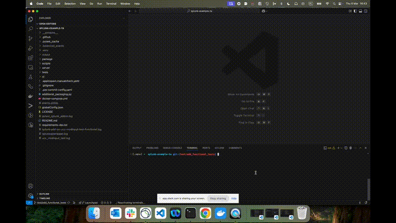
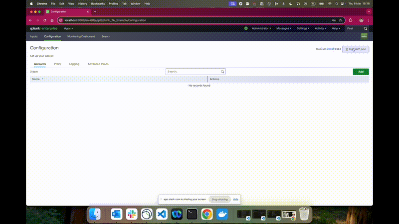
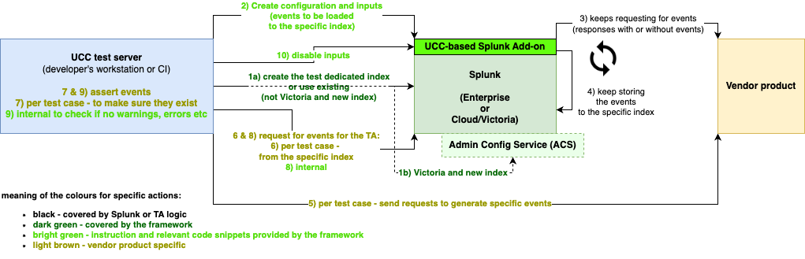
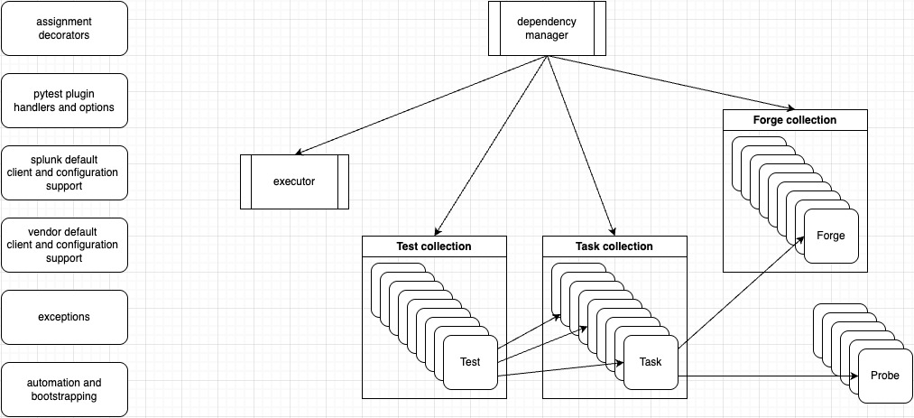
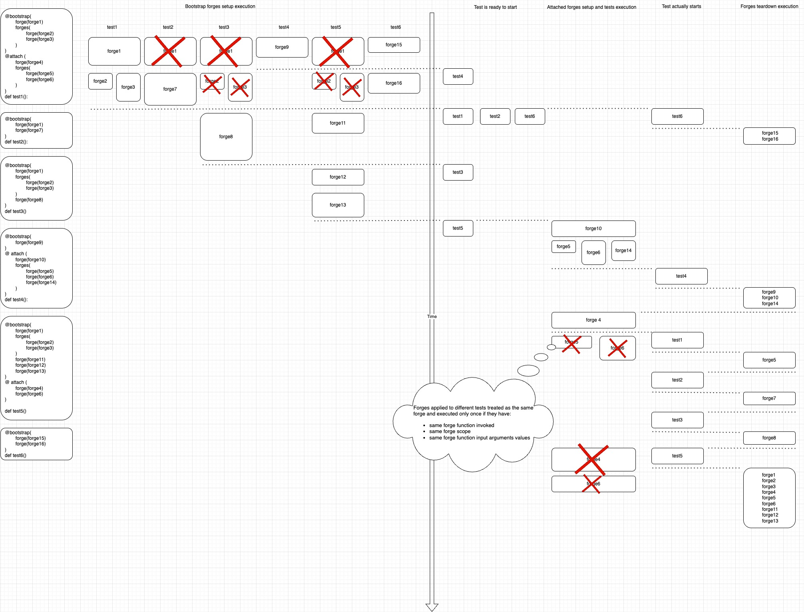

Overview¶
addonfactory-ucc-test (AUT) is an open-source testing framework for functional tests for UCC-based Splunk Add-ons which allows to test add-ons functonality for data ingestion. It automates add-ons configuration, events generation by vendor product side and assessment of ingested events providing platform for end to end tests.
Prerequisites¶
- Prepared basic setup for the add-on
- Vendor product configured for the add-on
- Splunk instance with add-on installed
- The setup is manually tested
- openapi.json saved to developer workstation
- docker installed and started
Installation¶
addonfactory-ucc-test can be installed via pip from PyPI:
pip install splunk-add-on-ucc-modinput-test
ucc-test-modinput --version
How can I run existing tests?¶
If you just want to run existing functional tests developed with use of the framework:
-
make sure the prerequisites are met and addonfactory-ucc-test is installed
-
export environment variables that describe your Splunk instance and the one specific for add-on you want to test (they should be described in
ucc_modinput_functional/README.md)

Writing all tests from scratch¶
Building a comprehensive test suite requires careful planning and adherence to best practices. Following paragraphs outlines the key aspects of starting from scratch, including the Design Principles that guide test architecture, the Test Scenarios that ensure coverage, important considerations Before You Write Your First Line of Code, and best practices When You Write Your Tests.
That is a lot to read.
You want to start small and simple?
Check our Hello World example first.
Hello World example¶
This, step by step, instruction uses Splunk_TA_Example to show how you can create end to end, functional, modinput tests for your add-on.
If you want to make a lab exercise, clone the repository to your workstation and create dedicated directory for the tests (eg. splunk-example-ta-test), so it can look like:
.
├── splunk-example-ta
└── splunk-example-ta-test
Satisfy prerequisites¶
Open splunk-example-ta/ in terminal.
Click to check where we are with the prerequisites
-
Prepared basic setup for the add-on
-
Vendor product configured for the add-on
-
Splunk instance with add-on installed
-
The setup is manually tested
-
-
openapi.json saved to developer workstation
-
docker installed and started
Example TA for Splunk comes with script that automates environment setup.
The script requires docker, so make sure that docker installed and started.
Click to check where we are with the prerequisites
-
Prepared basic setup for the add-on
-
Vendor product configured for the add-on
-
Splunk instance with add-on installed
-
The setup is manually tested
-
-
openapi.json saved to developer workstation
-
docker installed and started
Run following script
./scripts/run_locally.sh
-
server-example-ta that exposes
eventsendpoint on port 5000 -
splunk-example-ta that is Splunk instance exposing standard ports (we’ll be interested in 8000 - web and 8089 - management port) with example TA installed.
Click to check where we are with the prerequisites
-
Prepared basic setup for the add-on
-
Vendor product configured for the add-on
-
Splunk instance with add-on installed
-
The setup is manually tested
-
-
openapi.json saved to developer workstation
-
docker installed and started
There is another script that creates Example TA configuration and inputs:
./scripts/local_testing_setup.sh
You can verify both scripts results by:
-
opening the splunk instance: http://localhost:8000
-
signing in (admin / Chang3d!)
-
checking configuration and inputs
Click to check where we are with the prerequisites
-
Prepared basic setup for the add-on
-
Vendor product configured for the add-on
-
Splunk instance with add-on installed
-
The setup is manually tested
-
-
openapi.json saved to developer workstation
-
docker installed and started
Open configuration and download it to splunk-example-ta-test/ directory using OpenAPI.json button.
Click to check where we are with the prerequisites
-
Prepared basic setup for the add-on
-
Vendor product configured for the add-on
-
Splunk instance with add-on installed
-
The setup is manually tested
-
-
openapi.json saved to developer workstation
-
docker installed and started
You’ve got openapi.json that will be used in following steps. Moreover, you confirmed that you’ve got all you need to create necessary environment for development. You can delete docker containers
docker rm -f server-example-ta splunk-example-ta
./scripts/run_locally.sh
Note: The containers recreation is just one of a few options to prepare the environment for development. If you are not interested in having clean instance, you may consider:
-
inputs deactivation only
-
inputs and configuration deletion
-
etc.
init¶
Open splunk-example-ta-test/ directory in terminal. There should be openapi.json file downloaded as a part of satisfying prerequisities.
Install addonfactory-ucc-test and make sure it is installed
pip install splunk-add-on-ucc-modinput-test
ucc-test-modinput --version
ucc-test-modinput init --openapi-json openapi.json
.
├── swagger_client
│ ├── api
│ └── models
└── tests
└── ucc_modinput_functional
├── splunk
│ └── client
└── vendor
└── client
Hint: If you use version control system such as git, you don’t want to keep there swagger_client/ that will be generated for you from openapi.json by ucc-test-modinput.
Set environment variables for your Splunk instance.
export MODINPUT_TEST_SPLUNK_HOST=localhost
export MODINPUT_TEST_SPLUNK_PORT=8089
export MODINPUT_TEST_SPLUNK_USERNAME=admin
export MODINPUT_TEST_SPLUNK_PASSWORD_BASE64=$(ucc-test-modinput base64encode -s 'Chang3d!')
Run few auto-generated tests
pytest tests/ucc_modinput_functional
We will be interested in splunk-example-ta-test/tests/ucc_modinput_functional/ when working on following points of the instruction
.
├── README.md
├── __init__.py
├── defaults.py
├── splunk
│ ├── __init__.py
│ ├── client
│ │ ├── __init__.py
│ │ ├── _managed_client.py
│ │ ├── client.py
│ │ └── configuration.py
│ ├── forges.py
│ └── probes.py
├── test_settings.py
└── vendor
├── __init__.py
├── client
│ ├── __init__.py
│ ├── client.py
│ └── configuration.py
├── forges.py
└── probes.py
test_ta_logging - your first test¶
We want to have log level set to DEBUG for all of the tests we will write.
As the log level will be so common, we can add it to defaults.py
TA_LOG_LEVEL_FOR_TESTS = "DEBUG"
We will create appropriate test, to make sure log level is changed to DEBUG.
Let’s have dedicated file to test modifications in addon configuration - test_configuration.py. Move piece of code for log level from test_settings.py to test_configuration.py and adopt.
The code we are to use from test_settings.py
@attach(forge(set_loglevel, loglevel="CRITICAL", probe=wait_for_loglevel))
def test_valid_loglevel(splunk_client: SplunkClient, wait_for_loglevel: bool) -> None:
assert wait_for_loglevel is True
The code how it should look like in test_configuration.py
@bootstrap(
forge(
set_loglevel,
loglevel=defaults.TA_LOG_LEVEL_FOR_TESTS,
probe=wait_for_loglevel,
)
)
def test_ta_logging(splunk_client: SplunkClient) -> None:
assert (
splunk_client.get_settings_logging()["loglevel"]
== defaults.TA_LOG_LEVEL_FOR_TESTS
)
from splunk_add_on_ucc_modinput_test.functional.decorators import (
bootstrap,
forge,
)
from tests.ucc_modinput_functional.splunk.forges import (
set_loglevel,
)
from tests.ucc_modinput_functional.splunk.probes import (
wait_for_loglevel,
)
from tests.ucc_modinput_functional.splunk.client import SplunkClient
from tests.ucc_modinput_functional import defaults
splunk-example-ta-test/
pytest -v tests/ucc_modinput_functional/test_configuration.py
tests/ucc_modinput_functional/test_configuration.py::test_ta_logging PASSED [100%]
test_accounts - first, this addon-specific, test¶
We want to make sure account is created in addon configuration.
Account configuration requires server API key. That is configuration relevant to server-example-ta - vendor product. API key is a credential. We would like to keep it as non-plain text environment variables:
export MODINPUT_TEST_EXAMPLE_API_KEY_BASE64=$(ucc-test-modinput base64encode -s 'super-secret-api-token')
We need to document that for whoever will use our test. Open splunk-example-ta-test/tests/ucc_modinput_functional/README.md and add relevant information there.
Alongside with environment variables for Splunk, export API key for server-example-ta:
```console
export MODINPUT_TEST_EXAMPLE_API_KEY_BASE64=$(ucc-test-modinput base64encode -s 'super-secret-api-token')
```
splunk-example-ta-test/tests/ucc_modinput_functional/vendor/client/configuration.py, make sure the key is read from the variable and expose for use:
from splunk_add_on_ucc_modinput_test.common import utils
class Configuration(VendorConfigurationBase):
def customize_configuration(self) -> None:
self._api_key = utils.get_from_environment_variable(
"MODINPUT_TEST_EXAMPLE_API_KEY_BASE64",
string_function=utils.Base64.decode,
)
@property
def api_key(self) -> Optional[str]:
return self._api_key
from typing import Optional
We will need to create an account for testing purposes. The framework provides generic methods for this, so search for create_account in splunk-example-ta-test/tests/ucc_modinput_functional/splunk/client/_managed_client.py.
You were already able to see (by test_ta_logging example) that test function is decorated with forge functions. Let’s create one for the account in splunk-example-ta-test/tests/ucc_modinput_functional/splunk/forges.py
def account(
splunk_client: SplunkClient,
vendor_client: VendorClient,
) -> Generator[Dict[str, str], None, None]:
account_config = {
"name": f"ExampleAccount_{utils.Common().sufix}",
"api_key": vendor_client.config.api_key,
}
splunk_client.create_account(**account_config)
yield dict(
account_config_name=account_config["name"]
)
from tests.ucc_modinput_functional.vendor.client import VendorClient
We’ve got all of the blocks ready now to build our test function. Open splunk-example-ta-test/tests/ucc_modinput_functional/test_configuration.py
@bootstrap(
forge(
set_loglevel,
loglevel=defaults.TA_LOG_LEVEL_FOR_TESTS,
probe=wait_for_loglevel,
),
forge(account),
)
def test_accounts(
splunk_client: SplunkClient,
account_config_name: str,
) -> None:
actual_account = splunk_client.get_account(account_config_name)
assert actual_account is not None
from tests.ucc_modinput_functional.splunk.forges import account
We are ready to run test_accounts:
pytest -v tests/ucc_modinput_functional/test_configuration.py::test_accounts
tests/ucc_modinput_functional/test_configuration.py::test_accounts PASSED
test_inputs to make sure data is comming¶
We want to make sure input is created, data is ingested and input is deactivated. Goal is to have it available for troubleshooting if needed but we don’t want to keep the Splunk instance too busy with inputs active once events necessary for tests were already ingested.
Let’s find relevant methods to create and deactivate inputs in splunk-example-ta-test/tests/ucc_modinput_functional/splunk/client/_managed_client.py – create_example and update_example.
When creating input, we’ll use some default value for interval. Add following to defaults.py:
INPUT_INTERVAL = 60
In case of inputs, we want to be sure data is coming to specific index, source related to just created input and after the input gets created.
Whatever needs to happen before test execution, needs to be added before yield (test setup). yielded are values used for tests, other forges, probes, etc. What happens after, needs to be added after yield (teardown).
Let’s add example_input forge containing all the knowledge documented above to tests/ucc_modinput_functional/splunk/forges.py:
def example_input(
splunk_client: SplunkClient,
*,
account_config_name: str, # was defined in account forge
) -> Generator[Dict[str, str], None, None]:
name = f"ExampleInput_{utils.Common().sufix}"
index = splunk_client.splunk_configuration.dedicated_index.name
start_time = utils.get_epoch_timestamp()
splunk_client.create_example(name, defaults.INPUT_INTERVAL, index, account_config_name)
input_spl = (
f'search index={index} source="example://{name}" '
f"| where _time>{start_time}"
)
yield dict(input_spl_name=input_spl)
splunk_client.update_example(name, disabled=True)
from splunk_add_on_ucc_modinput_test.common import utils
from tests.ucc_modinput_functional import defaults
Once some configuration is added, modified or deleted and effect is not immediate, we use probes to wait with further steps until effects occur. Open tests/ucc_modinput_functional/splunk/probes.py and add events_ingested:
def events_ingested(
splunk_client: SplunkClient, input_spl_name: str, probes_wait_time: int = 10
) -> Generator[int, None, None]:
while True:
search = splunk_client.search(searchquery=input_spl_name)
if search.result_count != 0:
break
yield probes_wait_time
Input configuration requires account configuration that was tested in previous section. Moreover, just like for all the other tests, we want to make sure log level is set to default.
Let’s have dedicated test file for inputs - test_inputs.py in tests/ucc_modinput_functional/ with test_input:
@bootstrap(
forge(
set_loglevel,
loglevel=defaults.TA_LOG_LEVEL_FOR_TESTS,
probe=wait_for_loglevel,
),
forge(account),
forge(
example_input,
probe=events_ingested,
)
)
def test_inputs(splunk_client: SplunkClient, input_spl_name: str) -> None:
search_result_details = splunk_client.search(searchquery=input_spl_name)
assert (
search_result_details.result_count != 0
), f"Following query returned 0 events: {input_spl_name}"
utils.logger.info(
"test_inputs_loginhistory_clone done at "
+ utils.convert_to_utc(utils.get_epoch_timestamp())
)
test_configuration.py and few new:
-
from splunk_add_on_ucc_modinput_test.common import utils -
example_inputadd to imports fromtests.ucc_modinput_functional.splunk.forges -
events_ingestedfromtests.ucc_modinput_functional.splunk.probes
Run test_inputs:
pytest -v tests/ucc_modinput_functional/test_inputs.py::test_inputs
tests/ucc_modinput_functional/test_configuration.py::test_accounts PASSED
… want to see more examples?¶
Check the tests implementation for Example TA.
troubleshooting¶
-
This tutorial uses splunk-example-ta, so consider checking documentation for this project when facing any unexpected error.
-
In case of
npm error code E401 npm error Incorrect or missing password. ...error, please move your~/.npmrcfile to~/.npmrc.backup:mv ~/.npmrc ~/.npmrc.backup
Design principles¶
The addonfactory-ucc-test framework follows principles in an order based on importance:
Building blocks¶
The addonfactory-ucc-test framework consists of following building blocks:
-
addonfactory-ucc-test that contains:
-
ucc-test-modinputCLI tool used to initialise the tests (creates relevant directories, files and initial test; one time action), generate add-on SDK and other supporting actions (text encryption and decryption) -
addonfactory-ucc-test/functionalpytest plugin used to extend pytest functionality to support end-to-end functional tests
-
-
supporting artifacts:
-
ucc_modinput_functionaltests inSplunk Add-on for Example -
this documentation
-
Concepts to use and rules to follow¶
Framework comes with libraries used to deal with Splunk (Enterprise as well as Cloud), UCC-related functionalities and common actions.
There are following concepts used in the framework as well as rules add-on developer should follow:
-
Vendor product-related and add-on specific functionalities are left to the developer to deal with
-
test functions should be used just to assert actual vs expected values
-
test functions are wrapped by forge decorators that define setup and teardown tasks
-
forge can yield
Dict[str,Any]. Key becomes globally available variable that refers to relevant value -
probe function can be defined for forge to optimise setup time
-
forge functions are executed in a sequence as they appear - that means setup tasks are executed in a sequence of appearance while tear down tasks are executed in reversed order
-
forges decorator allows to group forge tasks that can be executed parallely
-
bootstrap decorators group forge tasks that are common for many tests
-
attach decorators group forge tasks that are specific for certain test
Note: Order of importance is discussed separately.
Performance¶
-
bootstrap makes sure setup and teardown tasks are executed just once, no matter for how many tests they are required.
-
probes when applied for setup tasks, makes setup task is finished as soon as expected state is achieved.
-
forges allows to parallelise independent tasks.
Complexity¶
The framework is thought the way, to be able to address even the most complicated Splunk add-ons. To achieve this goal, each forge should cover just one functionality. This way it becomes atomic. Atomic components can be connected, related or group flexible.
Data isolation¶
There are certain ways data can be isolated:
-
dedicated index is created for each test run by default and it is highly recommended to use the index. Moreover, AUT provides a functionality that allows to create custom indexes if needed
-
attach decorator allows to isolate specific tests so time range can be defined for splunk events
-
source of the event allows to identify input
-
unique test id can be used to distinguish between specific tests and test runs
Supported platforms¶
This framework is supported on the most popular workstations (MacOS, Linux, Windows) as well as CIs (GitHub, GitLab).
Test scenarios¶
General test cases are described. There are scenarios for each and relevant concepts that should be used.
Note: all forge tasks should be treated as bootstrap unless explicitly defined as attach
Note: if forge term is used, that generally refers to setup step unless explicitly defined as teardown
Basic scenario¶
We want to ingest some general events for few inputs and vendor product is talkative enough to expose the event within seconds or few minutes.
-
Increase log level to DEBUG (forge)
-
Create configuration (forge; yield configuration name - will be used for input)
-
Create inputs that depend on just created configuration (forge with probe - will be used to wait; yield SPL query that should contain at least index, source and start time information)
-
Wait till events are indexed (probe; use SPL query)
-
Test - assert event/actual values are as expected (use SPL query; assert returned values against expected values)
-
Disable inputs (forge teardown)
-
Decrease log level to initial value (forge teardown)
Isolate data in indexes¶
Note: this case is just an extension of Basic scenario and as such, just concepts that touches the differences will be described
Specifics of an add-on considered in this scenario does not allow to distinguish which input was used to ingest specific event.
Hint: When constructing tests for this kind of add-on, you want to have dedicated index for each input
-
Increase log level to DEBUG
-
Create (
forgesas following can be done independently)-
configuration
-
indexes (forge per index; yield index name - will be used for input)
-
-
Create inputs with reference to just created configuration and indexes
-
Wait
-
Test
-
Disable inputs
-
Decrease log level
Test proxies¶
Note: this case is just an extension of Basic scenario and as such, just concepts that touches the differences will be described
We want to be sure the add-on can be configured to use proxy if needed.
Hint: Proxy configuration is general for specific add-on, so if defined it will be used for all configuration entries as well as inputs.
When constructing this kind of tests you want to isolate them that can be achieved by using attach decorator that would group following tasks
-
Increase log level to DEBUG
-
Configure proxy or disabled if we want to test without proxy configured (
attacheto be sure all following forge tasks are in the context of this configuration)-
Create configuration - we want to be sure proxy configuration is applied to it, especially if connection to vendor product is established to validate configuration corectness
-
Create inputs
-
Wait
-
Test
-
Disable inputs
-
-
Decrease log level
Trigger events generation¶
We want to ingest some general events for an input and vendor product needs to be triggered to generate the events first.
-
Increase log level to DEBUG (forge)
-
Following steps can be executed independently, before relevant input is created (forges)
-
Create configuration (forge; yield configuration name - will be used for input)
-
Trigger vendor product to generate event (forge; yield timestamp)
-
-
Create input that depend on just created configuration and timestamp (forge with probe - will be used to wait; yield SPL query that should contain at least index, source and start time information)
-
Wait till events are indexed (probe; use SPL query)
-
Test - assert event/actual values are as expected (use SPL query; assert returned values against expected values)
-
Disable input (forge teardown)
-
Decrease log level to initial value (forge teardown)
Configure vendor product¶
Note: this case is just an extension of triggering events generation and as such, just concepts that touches the differences will be described
Vendor product needs to be configured before it can be triggered to generate the events. The vendor product configuration has to be roll back then.
-
Increase log level to DEBUG
-
Configure vendor product (forge; yield configuration name - it can be used later for configuration or input and the configuration teardown)
-
Before input is created
-
Create configuration
-
Trigger vendor product to generate event
-
-
Create input
-
Wait
-
Test
-
Disable input
-
Delete vendor product configuration (forge teardown)
-
Decrease log level
Eliminate dangling resources¶
Note: this case is just an extension of configuring vendor product and as such concepts that touches the differences will be described
It happens that teardown is not reached in the tests. There can be number of reasons - eg. developer interupts tests execution before teardown is reached.
We have to maintain hygiene in vendor product configuration to eliminate dangling resources.
Hint: We want to be able to distinguish configuration created for our tests from: 1. configuration used for other purposes, 2. configuration created for our tests but other time, 3. configuration created for our tests but by other test run - that may be a case in CI
All the steps are the same as for configuring vendor product, beside implementation of:
-
Configure vendor product:
-
Check list of configuration items and filter by names. Process only if name: 1. matches predefined pattern for the tests, 2. timestamp shows the configuration is older than predefined threshold. Delete the resources.
-
When creating the configuration, make sure its name 1. matches predefined pattern, 2. contains timestamp and 3. contains test id.
-
Before you write your first line of code¶
AUT is a powerful toolset.
Add-on developer experience is the most important for us and we don’t want you to get lost in what is available for you.
Learn from Splunk Add-on for Example¶
Before you start working on your own tests, check splunk-example-ta to get basic understanding of the example TA. Think how you would test it.
Open tests/ucc_modinput_functional and go through it in proposed below order to see how it is tested. Are your ideas addressed?
tests/ucc_modinput_functional¶
-
README.md- contains add-on specific information related to the functional tests -
defaults.py- contains predefined, the tests-specific, constant values -
vendor/- contains vendor product-specific code-
configuration.py- to read configuration from environment variables; it can be used later for vendor product-specific means (eg. triggering action that would generate event available for add-on to collect), add-on configuration or within test functions -
client.py- contains code used to communicate with vendor product
-
-
splunk/- contains add-on specific code-
client.py- contains code used to communicate with add-on REST API; relevant code snippets can be found in swagger_client README.md copied from there, pasted to the client file and adopted -
forges.py- contains functions responsible for creation and deletion of resources and configurations (forges);yieldin each forge, separates setup and teardown -
probes.py- contains functions validating specific conditions used to make sure that execution of a specific forge indeed resulted in creation of expected resource.
-
-
test_configuration.py- start simple, eg. from making sure the simplest case liketest_ta_loggingworks fine. Keep adding following tests for add-on configuration to make sure you are able to define building blocks that will be used for inputs -
test_inputs.py- you have proper configuration. There are still two things you need to confirm:-
Make sure vendor product is talkative enough to have always events available for your tests or you need to trigger events generation
-
Input forge should return spl query you will use in input probe as well as in test to get raw events for assertion
-
… also worth considering¶
There are components you may still want to add to your tests:
-
vendor/-
forges.py- use if you want to setup and teardown resources in vendor product -
probes.py
-
-
splunk/configuration.py- this file is to cover values not related to vendor product, such as proxy accounts
-
test_proxies.py- to test proxies. Proxy configuration is general for specific add-on, so if defined it will be used for all configuration entries as well as inputs. When constructing this kind of tests you want to isolate them that can be achieved by usingattachdecorator that would group following tasks:-
making sure proxy is defined as required (or disabled if we want to test without proxy configured)
-
relevant configuration creation - especially if validation is used that requires relevant connection to vendor product
-
input creation
-
etc.
-
-
test_validators.py- to test that add-on will not accept improper values for its configuration. -
etc.
Above is just a proposition that may be relevant for small to medium add-ons.
If you find your add-on more complex, feel free to organize the test structure the way you find the most convenient and efficient.
ucc-test-modinput init¶
Init command is created to save some of your efforts by doing boilerplate actions:
- generates swagger client supporting modules,
- creates unified tests file structure,
- bootstraps basic splunk and vendor clients together with configuration classes,
- initial tests with forges and probes required for them.
This command should be executed once before before any unified tests are created for the project.
-
Before invoking init command, please, make sure:
-
Run
initto have following directories generated for you:ucc-test-modinput init-
swagger_clientdirectory with supporting modules -
tests/ucc_modinput_functionaldirectory with relevant files and some UCC related tests.
-
Note: You may want to specify openapi.json file location - eg. if it is in Downloads:
ucc-test-modinput init --openapi-json ~/Downloads/openapi.json
ucc-test-modinput page for more
-
Set environment variables for your Splunk instance. Eg.:
export MODINPUT_TEST_SPLUNK_HOST=localhost export MODINPUT_TEST_SPLUNK_PORT=8089 export MODINPUT_TEST_SPLUNK_USERNAME=admin export MODINPUT_TEST_SPLUNK_PASSWORD_BASE64=$(ucc-test-modinput base64encode -s 'Chang3d!') -
Run the tests
pytest tests/ucc_modinput_functional
Note: If your add-on code contains customisations for out of the box components (such as logging or proxy), some tests may fail.

When you write your tests¶
Running ucc-test-modinput init provides a starting point for further development.
Start with the basic case even if you need to cover more complex test cases. This will allow you to ensure there is access from the development environment to the vendor product.
This paragraph contains hints that should be useful for your test development.
Keep checking the example for implementation details.
Vendor product¶
General hints¶
Vendor product specific code is entirely in developer’s hands. There are however some hints you may find useful:
-
Consult Product Documentation:
Begin with the official product documentation. These resources often include code samples and integration guides that can be directly applied to your tests, saving development time and effort. -
Explore Official Repositories:
Check vendor official repositories (eg. GitHub). These repositories might contain supporting libraries or example code that can aid in developing integrations. -
Leverage Package Indexes:
Utilize PyPI.org or equivalent package indexes for discovering SDKs and libraries that are specific to the vendor products. These SDKs can simplify the integration process and ensure compatibility. -
Utilize OpenAPI Specifications:
If available, use OpenAPI or equivalent specifications to create or generate client libraries for the vendor products. This can facilitate a more streamlined and automated integration process. -
Engage with Developer Communities:
Platforms like Reddit and StackOverflow are valuable for community support. You can find discussions, troubleshooting tips, and shared experiences related to integrating vendor products. -
Consult AI Tools:
Consider using AI services to assist with coding, integration challenges, or generating documentation. These tools can provide insights or generate code snippets that may enhance your framework.
Framework specific hints¶
It is highly recommended to stay consistent with Splunk specific code to have internally consistent and easier to maintain tests. To achieve it, consider following hints:
-
Follow
vendor/directory structure as described in the example TA -
Store credentials in environment variables and use
get_from_environment_variablefromsplunk_add_on_ucc_modinput_test.common.utilsto read the credentials- if environment variable is optional, use
is_optional=Trueparameter - eg.:
self.username = utils.get_from_environment_variable("MODINPUT_TEST_FOOBAR_USERNAME", is_optional=True)Nonewill be assigned toself.usernamein example as above-
if environent variable should be encoded, use relevant sufix to emphasize a fact it was done and use
string_functionparameter when callingget_from_environment_variablefunction - eg.:in example as above:self.token = utils.get_from_environment_variable("MODINPUT_TEST_FOOBAR_TOKEN_BASE64", string_function=utils.Base64.decode)-
_BASE64suffix is used to emphasize the password value should be base64 encoded -
string_functionis pointing to callable object that will do string transformation.
-
- if environment variable is optional, use
Splunk¶
Proper spl query construction is crucial for proper tests results and performance.
The spl query format looks like below:
search index={index_name} source={source_name_containing_input_name} {raw_event_specific_string} | where _time>{start_time}
-
index_name can be:
-
default - assigned to
splunk_client.splunk_configuration.dedicated_index.name -
dedicated - check data isolation principle or relevant test scenario for more
-
-
source_name_containing_input_name highly depends on add-on implementation; eg. for example add-on source part of the spl is defined as
source="example://{name}"(wherenameis for input name) -
raw_event_specific_string that can be skipped, if other values are sufficient, one or many strings that define uniquely raw event we are interested in
-
start_time - epoch timestamp should be used, however where timestamp is collected should be pick with special care. Check test scenarios to understand what potential options you’ve got. Timestamp of begginig of tests can be used as default:
start_time = utils.get_epoch_timestamp()
When your tests are ready¶
-
Run tests:
pytest tests/ucc_modinput_functional/(and fix tests if needed) -
Document add-on specific information related to the functional tests in
tests/ucc_modinput_functional/README.md. Particularly - how vendor product should be prepared (or reference to relevant documentation) as well as what vendor and test specific environment variables should be exported -
Commit and push your modifications to code repository. Ignore
output/andswagger_client/directories that are generated byucc-gen genanducc-test-modinput genrespectively.
ucc-test-modinput CLI tool¶
ucc-test-modinput CLI is a supporting tool.
It comes with following arguments:
-
--helpor-h; shows help message and exits ; you can use it for arguments as well - eg.ucc-test-modinput base64encode -hwill show help message forbase64encode -
--version- shows program’s version number and exit -
base64encode- converts complex string (due to special characters or structure) to base64 string-
--stringor-s;-s [string you want to encode]- eg.base64encode -s ThisIsMyPassword -
--fileor-f;-f [text file path; string from the file will be encoded]- eg.ucc-test-modinput base64encode -f ~/client_secret.json
-
-
base64decode -s [string you want to decode]- eg.ucc-test-modinput base64decode -s VGghczEkTXlQQHNzdzByZA== -
gen- does two things: 1. creates add-on SDK from given openapi.json, 2. creates splunk client module and checks if existing (ucc_modinput_functional/splunk/client/client.py) is the same-
--openapi-jsonor-o;-o [path to openapi.json / source file ]- default value isoutput/*/appserver/static/openapi.json; refer to UCC documentation to learn more where you can find this document -
--client-codeor-c;-c [path to client code / target directory]- default value is set to repo root directory ; this is whereswagger_clientdirectory will be saved or overwriten if some exists already. The directory contains client code for TA REST API andswagger_client/README.mdfile that documents the client API -
--tmpor-t;-t [path to directory where temporary files are stored]- default value is set to/modinput/subdirectory of directory used for temporary files -
--platformor-p- not used by default ;--platformflag that can be used to run swaggerapi/swagger-codegen-cli-v3 docker image -
--skip-splunk-client-check- exisitng splunk client will not be checked aginst consistency with swagger client that may lead to inconsistent state of splunk client; this isgenspecific flag and does not exists forinit -
--force-splunk-client-overwritten- existing splunk client will be backup and overwritten by new one; this isgenspecific flag and does not exists forinit
-
-
init- initialize modinput tests (you can read more on that here) and runsgento have add-on SDK created ; none additional argument is required for the initialization step, so argument list is as forgen(excluding--skip-splunk-client-checkand--force-splunk-client-overwritten)
addonfactory-ucc-test pytest plugin¶
addonfactory-ucc-test plugin extendst pytest to support end-to-end Splunk add-ons flow.
It comes with libraries that cover standard Splunk (Enterprise and Cloud) functionalities as well as general UCC functionalities, such as:
-
indexes creation
-
searching
-
common configuration and inputs management
Relevant environment variables have to be defined to benefit from the functionalities.
The plugin requires vendor product specific and add-on specific functionalities to be covered by add-on developer. This includes specifying environment variables that include information about vendor product address, user that should be used to generate events or user that should be used for integration.
Expected environment variables¶
Information about Splunk has to be given in relevant environment variables:
-
MODINPUT_TEST_SPLUNK_HOST - Splunk Enterprise IP or domain address or Splunk Cloud domain address (eg.
127.0.0.1,localhostortest.splunkcloud.com).httpsprotocol is used for connection and ssl verification is skipped to support developer and test Splunk instances. -
MODINPUT_TEST_SPLUNK_PORT - management port (
8089in most cases) -
MODINPUT_TEST_SPLUNK_USERNAME - Splunk admin username (
adminin most cases) that will be used for tests -
MODINPUT_TEST_SPLUNK_PASSWORD_BASE64 - base64 encoded Splunk user used for tests password (eg.
Q2hhbmczZCE=as a result ofucc-test-modinput base64encode -s 'Chang3d!'; check ucc-test-modinput documentation for more) -
(optional) MODINPUT_TEST_SPLUNK_DEDICATED_INDEX - existing index name that should be used to write test events. If not defined, dedicated index is created for each test run and used for the same purpose.
-
following variables are required only if Splunk Cloud is used for tests and any index needs to be created for tests:
-
MODINPUT_TEST_SPLUNK_TOKEN_BASE64 - base64 encoded Splunk Cloud authentication token
-
MODINPUT_TEST_ACS_SERVER - ACS server (eg.
https://admin.splunk.com,https://staging.admin.splunk.comorhttps://admin.splunkcloudgc.com) -
MODINPUT_TEST_ACS_STACK - ACS stack, that in majority of the cases will be just part of Splunk Cloud domain address (eg. for
ucc-test.stg.splunkcloud.com, ACS server would behttps://staging.admin.splunk.comand ACS stackucc-test)
-
Action diagram¶

Plugin arguments¶
addonfactory-ucc-test pytest plugin comes with following arguments:
-
--sequential-execution- use no threading (for debugging) -
--do-not-fail-with-teardown- do not fail test if test’s teardown fails. By default a test will fail if any of its forges teardowns fail, even if the test itself passed. -
--do-not-delete-at-teardown- do not delete created resoueces at teardown. This flag is for debug purposes and should be handled by developer if needed. For example, based on this flag developers can add alternative code to forges’ teardowns, to disable inputs instead of deleting them in order to study inputs configurations after tests execution. -
--number-of-threads=[NUMBER_OF_THREADS]- number of threads to use to execute forges. Allowed range: [10, 20]. Default value: 10. -
--probe-invoke-interval=[PROBE_INVOKE_INTERVAL]- interval in seconds used to repeat invocation of yes/no type of probes. Allowed range: [1, 60]. Default value: 5. -
--probe-wait-timeout=[PROBE_WAIT_TIMEOUT]- maximum time in seconds given to a single probe to turn positive. Allowed range: [60, 600]. Default value: 300. -
--bootstrap-wait-timeout=[BOOTSTRAP_WAIT_TIMEOUT]- maximum time in seconds given to all bootstrap tasks to finish. Allowed range: [300, 3600]. Default value: 1800. -
--attached-tasks-wait-timeout=[ATTACHED_TASKS_WAIT_TIMEOUT]- maximum time in seconds given to finish all tasks attached to a single test. Allowed range: [60, 1200]. Default value: 600. -
--completion-check-frequency=[COMPLETION_CHECK_FREQUENCY]- frequency to check that bootstrap or attached tasks bundle has finished to execute. Allowed range: [1, 30]. Default value: 5.
Contributing Guidelines¶
We welcome contributions from the community! This guide will help you understand our contribution process and requirements.
Development guidelines¶
- Small PRs (blogpost)
- When fixing a bug, include a test that reproduces the issue in the same pull request (the test should fail without your changes)
- If you are refactoring, ensure adequate test coverage exists for the target area. If coverage is insufficient, create tests in a separate pull request first. This approach provides a safety net for validating current behavior and simplifies code reviews.
Build and Test¶
Prerequisites:
- Poetry 1.5.1. Installation guide
Build a new local version:
poetry build
Unit tests¶
poetry run pytest tests/unit
Linting and Type-checking¶
addonfactory-ucc-test uses the pre-commit framework for linting and type-checking.
Consult with pre-commit documentation about what is the best way to install the software.
To run it locally:
poetry run pre-commit run --all-files
Documentation changes¶
Documentation changes are also welcome!
To verify changes locally:
poetry run mkdocs serve -a localhost:8001
Issues and bug reports¶
If you’re seeing some unexpected behavior with AUT, create an issue on GitHub. You can click on “New Issue” and use the template provided.
Pull requests¶
We love to see pull requests!
PR Title¶
We follow Conventional Commits for PR titles. The title format is crucial as we squash commits during merge, and this PR title will be used in the release notes (for feat and fix types). Here’s a short TL;DR of the format:
<type>(<scope>): <description>
Types:
- feat: New feature (user facing)
- fix: Bug fix (user facing)
- docs: Documentation changes (user facing)
- style: Code style changes (formatting, etc.)
- refactor: Code changes that neither fix bugs nor add features
- perf: Performance improvements
- test: Adding or updating tests
- chore: Maintenance tasks
Example: feat(ui): add new input validation for text fields
PR Description¶
Includes:
- Motivation behind the changes (any reference to issues or user stories)
- High level description of code changes
- Description of changes in user experience if applicable.
- Steps to reproduce the issue or test the new feature, if possible. This will speed up the review process.
After submitting your PR, GitHub will automatically add relevant reviewers, and CI checks will run automatically.
Note:
semgrepandfossachecks might fail for external contributors. This is expected and will be handled by maintainers.
Release flow¶
The instructions below utilize the GitHub CLI tool, which you can install via HomeBrew:
brew install gh
gh auth login
- The default development branch is
develop. Use this branch for creating pull requests (PRs) for your features, fixes, documentation updates, etc. PRs to thedevelopbranch should be merged using the squash option on GitHub. - When it’s time for a release (handled by the UCC team), create a PR from
developtomainusing the following commands:
gh pr create --title "chore: merge develop into main" --body "" --head develop --base main
# set automerge with merge commit to avoid accidentally squashing PR
gh pr merge develop --auto --merge
- Ensure CI passes and await team review.
- PR should be merged using merge commit option in GitHub (already included in the command)
- Releases are made automatically (both on GitHub and PyPI), and a bot will push a commit to
mainwith all necessary changes - If necessary, update release notes and CHANGELOG.md accordingly to the content of the release.
- If any issue was solved by this release, remove waiting-for-release label from it and then close the issue.
- After the release, backport the bot’s changes to the
developbranch:
gh pr create --title "chore: merge main into develop" --body "" --head main --base develop
# set automerge with merge commit to avoid accidentally squashing PR
gh pr merge main --auto --merge
-
If a release encounters issues requiring a quick bug fix (handled by the AUT team):
- Create a PR to the main branch with the fix, including tests that reproduce and then fix the issue.
- Ensure CI passes and await team review.
- Merge the PR using the merge commit option on GitHub.
- Backport the bug fix PR to the develop branch.
-
After release is done, announce it to community on slack channels:
Changelog¶
2.0.5 (2025-11-17)¶
Bug Fixes¶
2.0.4 (2025-10-21)¶
Bug Fixes¶
2.0.3 (2025-10-21)¶
Bug Fixes¶
2.0.2 (2025-10-17)¶
Bug Fixes¶
2.0.1 (2025-08-25)¶
Bug Fixes¶
2.0.0 (2025-08-08)¶
Features¶
- add support for creating metric index (c9f9e00)
- add support for creating metric index (#134) (38cfd58)
- release 2.0.0 (#135) (8516563)
- search for all types of indexes in get_index (35ef4b5)
- support kvstore api (#131) (930a076)
BREAKING CHANGES¶
- change get_index method interface so it’s able to get indexes from idm stacks.
PR Type¶
What kind of change does this PR introduce? * [X] Feature * [ ] Bug Fix * [ ] Refactoring (no functional or API changes) * [X] Documentation Update * [ ] Maintenance (dependency updates, CI, etc.)
Summary¶
Test runs:
https://cd.splunkdev.com/taautomation/ta-automation-compatibility-tests/-/pipelines/28335229
https://cd.splunkdev.com/taautomation/ta-automation-compatibility-tests/-/pipelines/28340518
https://cd.splunkdev.com/taautomation/ta-automation-compatibility-tests/-/pipelines/28533993
https://cd.splunkdev.com/taautomation/ta-automation-compatibility-tests/-/pipelines/28533938
Changes¶
Please provide a summary of the changes.
User experience¶
Please describe the user experience before and after this change. Screenshots are welcome for additional context.
Checklist¶
If an item doesn’t apply to your changes, leave it unchecked.
- I have performed a self-review of this change according to the development guidelines
- Tests have been added/modified to cover the changes (testing doc)
- Changes are documented
- PR title and description follows the contributing principles
1.0.1 (2025-07-02)¶
Bug Fixes¶
- add error handling while tests collection (#108) (263b900)
- set proper attribute name for token (#120) (ea0eb1d)
1.0.0 (2025-05-27)¶
Troubleshooting¶
CI issues¶
-
While installing the framework from Git instead of PyPI, you may encounter the following error:
HangupExceptionThe remote server unexpectedly closed the connection .... The following error occurred when trying to handle this error: HangupException git@github.com: Permission denied (publickey) ....To resolve that, please install the package using PyPI. If that is not possible, and you use
addonfactory-workflow-addon-release, please make sure you’re using at leastv4.19version. 2. If you encounter the following error:Please make sure to synchronize your output folder with the latest TA dev state and regenerateExisting splunk client (tests/ucc_modinput_functional/splunk/client/_managed_client.py) is outdated. Use --force-splunk-client-overwritten to overwrite it or --skip-splunk-client-check if you want to post._managed_client.pyby runningand add theucc-gen build ucc-test-modinput gen --force-splunk-client-overwritten_managed_client.pyfile to your commit.
Framework deep dive¶
Not yet finished, writing is still in progress …
Framework philosophy¶
This section explains the background why this framework was created, what it tries to solve and what ideas it implements
Popular add-on test scenarios¶
Spunk technical add-on is an application which goal is to interact with vendor customer environment in order to pull required vendor specific data and then send it to Splunk environment to be ingested and saved in desired Splunk indexes. This makes functional testing of add-ons to stick to a couple of common test scenarios:
- Test of Add-on configuration validators:
-
interact with add-on API endpoint trying to configure various add-on supported objects (inputs and supporting configuration files) using incorrect values
-
expecting that corresponding API endpoint rejects these values with expected explanatory error message in response and proper error logged.
-
Delete configuration and objects created for test from Splunk instance.
For example, test can try to configure add-on proxy configuration using unsupported port number and expect that proxy will not be configured and the endpoint responses with an error message clearly pointing to unsupported port number.
- Data ingestion validation:
-
interact with customer environment to apply configurations, create objects or reproduce user actions in order to recreate conditions making desired vendor specific data to appear and ready for pulling to Splunk.
-
interact with add-on at Splunk instance to apply configurations and create objects in order engage required add-on modular input to ingest data created for it in customer environment.
-
validate ingestion by interacting with Splunk services to makes sure that expected number of events of expected type have been ingested as well as make sure that add-on modular input did not log any error messages during ingestion process.
-
Delete configuration and objects created for test from customer environment and Splunk instance.
For example, functional test may verify correct ingestion of data from AWS S3 bucket which may require to configure S3 bucket and upload a data file prepared for test, configure corresponding input the way it would point to correct resource at created S3 bucket, let this input to run and ingest expected data, execute Splunk searches to confirm the number and sourcetypes of ingested events are correct, execute Splunk searches to make sure input did not log any error messages during ingestion process.
Test requirements¶
Based on the test scenarios and examples listed above it is clear that for each add-on functional test before actual verification developer should deal with preparing test requirements, i.e. creation of necessary resources at Splunk or vendor related environment - objects and configurations, possibly uploading some test data. Next step is to retrieve some of test environment state properties and only then do the actual checks by comparing retrieved parameters values with expectations. Another thing to take care is to remove prepared resources after the test completion or at the end of test session. There are even more topics to think about connected with test execution optimization: for example, if several test can safely reuse the same resource it would be better to preserve this resource to let it be reused instead of creating and deleting it several times for each tests; or what if several resources for a tests are independent then it would be faster to create them in parallel. Taking care about such improvements makes tests better but at the same time adds complexity and may make them less clear and straightforward and less maintainable. Unified functional test framework was developed with desire make it take care about all the mentioned improvements while hiding from developers all related complexity and giving clear and straightforward way to create test and describe test requirements.
Framework requirements¶
To address the challenges listed above, several core requirements have been developed to be implemented by the framework:
-
Framework should provide a declaration way of describing test requirements (resources required for tests) outside the test function body.
-
Test requirements should be provided in same area as the tests function they belong to and give clear understanding what resources are needed, and in what order they should be created.
-
Test itself should be as small as possible and only contain as much code as needed for verifications (assert statements) and optionally the code to collect data needed for verifications.
-
Dependencies between resources should be declared as a flat list in contrast to recursive approach where code creating resource also creates all resources it depends on which increases code complexity and hides dependencies from developer potentially making the code difficult to understand and support.
-
Developer should be able to specify if some resources can be created in parallel.
-
Developer should be able to specify what resources can be created in advance and what should be created right before test execution.
-
Framework should understand lifetime of a resource and execute code removing the resource as soon as all tests using it are executed. Developer should have a way to alter default framework behavior for specific tests.
-
Developer should be able to specify conditions for certain resources that can be used by framework to confirm that this resource is created or to wait for this resource to be created during required time.
Framework basic concepts¶
To address the above requirements framework introduces a concept of forges - reusable functions responsible for creation and optionally deletion of required resources. They are implemented by developer separately from tests and bound to test functions using ‘bootstrap’ or ‘attach’ decorators. The order in which forges are listed within decorators defines the dependencies between forges. In other words, forge declared earlier becomes a prerequisite for a forge declared later. As a result framework will make sure that dependent forge is executed after its dependency. If two or more forges do not depend on each other, they can be declared in the same “line” or block of forges which would tell framework to execute these forges in parallel if possible.
Forges can accept data via function arguments. The values for those arguments can be defined by a user explicitly or via parametrized arguments when declaring a forge as test requirement. Another way for a forge to receive argument values is to collect them from test artifactory. Artifactory is an internal storage of key-value pairs maintained for each test function separately. The mapping of values from artifactory to forge arguments is done by framework automatically by arguments names. Forges can update artifactory values or create new ones through returned or yielded values.
When forge function is assigned to a specific tests it will receive argument values specific for this test that may be the same or differ from other test. Depending on argument values the results of forge executions also can be the same or different. In some sense one can think about assigned forge as about a task that creates a resource or fulfills an action. Framework assumes that forge functions is not affected by any any side values or processes, which means that executing the same forge function with the same argument values should results in the same action taken or in the same resource created. Based on this, same forge executed twice with different argument values is treated by framework as two different tasks while when executed with the same argument values will be treated as the same task creating the same resource and by default framework will try to skip unnecessary executions. Internally framework operates with tasks entities that are combinations of a forge function with specific argument values and optionally attached probe and assigned to a specific test, however developer does not deal with tasks objects directly.
When assigning a forge to a test, one of two additional properties that developer can configuration is “probe”. Probe property allows to attach a probe function that will be used by framework to make sure that action taken by forge indeed has expected result, i.e. a resource has been created or a specific configuration has been applied. Framework will be invoking probe function with certain interval until probe gets successful or time given for probe to success expires. Just like forges probe functions can access test artifactory variables via declared function arguments. Last boolean value returned by a probe will be added by framework to the test artifactory with the name of probe function as the property name so the test function will be able to verify if the probe was successful or exited because of timeout.
Scope is the second of the two arguments that forge can accept when assigned to a tests. Before forge function execution framework pays attention to forge function name, forge function arguments values and forge scope. If there several tests that have the same forge with the same scope assigned to them and those forges have the same call argument values, framework assumes it is the same forge (or forge represents the same task) dedicated to create the same resource and executes it only once. By default all forges have “session” scope which means this comparison will take place across all the executed tests. Changing scope value at forge assignment to tests allows to narrow the scope of tests for which forge execution results may be reused, for example to all tests in the same module or to a single test. Note that as soon as the last test using forge is executed, framework invokes teardown code of the forge if such code was implemented by developer.
It is also important which of the two decorators are used to assign forge to a test. Bootstrap decorator assumes that forge should create resource before executing tests. All forges assigned to different tests taken as independent and executed in parallel - first go all forges at bootstrap list top, then all in the second place and so on. Attach decorator works differently - it invokes forges right before the test execution. Bootstrap is more preferable way to execute forges to achieve better tests execution times, but it requires from developer more efforts to make sure that forges of different tests do not compete for configuring the same resource. There are some cases where it’s possible to avoid this competition, for example when dealing with global or single instance resources like testing different proxy configurations. In those cases it’s important to apply each specific configuration right before execution of (i.e. specifically for) related test function and ‘attach’ decorator is the proper way to do this.
It is important to mention that framework also allows tests to receive (or subscribe for) test artifactory properties generated during forge executions just by using their names to test function argument list. This way forges and probes can prepare some useful values in test artifactory and let test to use them for necessary verifications.
In some sense forges and pytest fixtures have a lot in common, however they are very different in one important way - the way of organizing dependencies between them. To make a fixture A to depend on results of fixture B, fixture B should be declared as argument of fixture A. Implemented this way, the relationship between fixture A and fixture B are hardcoded and B cannot be replaced with another fixture that would generate expected output using different source data or algorithm. When fixture A is used in tests, its dependencies are hidden from developer, and to understand what fixture A does, developer should study its dependency B as well, and inside be he may discover other dependencies and so on. In big test projects relationship between fixtures can become pretty sophisticated. Forges dependencies, in contrast, are dynamic and rely on artifactory variables provided by dependency forges, that allows to recombine forges according to desired test scenario and taking into account arguments expected by the forge function and generated by it artifacts. When talking about declaring test dependencies, they all (test dependencies together with forges dependencies) are declared in a form of a flat list located right before test function that gives to developer a clear picture about test requirements, i.e. resources to be created for the test execution.
Framework structure and entities¶
Framework is created as pytest plugin and relays on pytest mechanisms of tests execution. Above pytest functionality framework collects information about required forges, tries to execute them optimally respecting defined dependencies and making sure that corresponding tests are not executed before all declared by developer requirements are met.

Splunk client¶
Splunk client is a combination of two classes - client class, responsible for interactions with Splunk environment, and configuration class, responsible for providing necessary settings for client class to act and some test data and settings for forge, probe and test functions. This separation is chosen to make it possible to apply different configuration to the same client class and let it communicate with different Splunk instances or point to different test samples and so on. Using provided client and configuration classes framework creates a separate instance of client class for each test and make it available to forge, probe and test functions via internally supported function arguments.
Splunk client class¶
Splunk client class is supposed to implement methods providing access to Splunk and add-on specific API. This client class is what developer deals with through framework supported function argument splunk_client when implementing framework entities like forges, probes and tests themselves. Developer can use either default client class available out of the box or extend it with add-on API support as well as with custom methods to add support for Splunk related functionality not supported by the framework. Framework tries to save developers’ efforts by automating the creation of splunk client class when developer executes framework init and gen commands. These commands use openapi.json file generated by UCC while building TA package to create swagger support classes for add-on API endpoints. Then, based on swagger classes, framework generates a new managed client class inherited from framework base client class. At the same time framework generates one more “developer facing” client class inherited from the managed client class. By doing this framework adds support for add-on API and also prepares area for developers’ custom code extensions.
Splunk functionality supported out of the box.¶
-
splunk_client.instance_epoch_time() - returns current time at splunk instance in epoch format
-
splunk_client.search(query) - executes SPL search query at Splunk instance and returns result in SearchState class object (splunk_add_on_ucc_modinput_test.common.splunk_instance.SearchState)
-
splunk_client.create_index(name, datatype) - creates Splunk index with a given name and data type (event or metric). Returns splunklib.Index object.
-
splunk_client.default_index() - returns default Splunk index name if framework configured to create one.
-
splunk_client.search_probe(probe_spl, verify_fn, timeout, interval, probe_name) - probe generator function to simplify creation of framework probes based on Splunk searches.
-
splunk_client.repeat_search_until(spl, condition_fn, timeout, interval) - methods execution Splunk search continuously in defined intervals until it gets expected result or reaches timeout.
-
splunk_client.instance_file_helper() - Factory method for SplunkInstanceFileHelper, allowing to execute some file operations directly on Splunk host. Requires
Splunk Add-on for Modinput Testto be installed on the Splunk host. May be used for creation and verification of file based checkpoints. -
splunk_client.app_file_helper() - same as instance_file_helper except SplunkInstanceFileHelper (splunk_add_on_ucc_modinput_test.functional.common.splunk_instance_file) will treat provided file paths as relative to add-on root folder on Splunk host. Requires
app_nameproperty to be part ofsplunk_clientconfiguration class. -
splunk_client.kvstore_api_helper() - Factory method for SplunkInstanceKVStoreAPI, allowing to execute api calls for KV store directly on Splunk host. Requires
app_nameandapp_userproperties to be part of splunk_client configuration class. It is used to get the record from KV store collection.
Add-on API endpoint support¶
Each technical add-on creates an additional set of API endpoints responsible for add-on resources like inputs, configuration files and custom rest handlers.
As mentioned earlier framework init and gen commands
Client configuration class¶
Client configuration class is a separate class dedicated to collect all settings for client class. Framework contains implementation of the base configuration class to collect settings for base client class functionality. Developer has an option to extend it by inheriting a new class form base configuration class and adding new properties as well as redefine values or sources of default properties. Framework init command generates default client configuration class that looks like the following
from splunk_add_on_ucc_modinput_test.functional.splunk import (
SplunkConfigurationBase,
)
class Configuration(SplunkConfigurationBase):
def customize_configuration(self) -> None:
# to be implemented
# self.encoded_prop = utils.get_from_environment_variable(
# "ENV_PROP_NAME1", string_function=utils.Base64.decode
# )
# self.not_encoded_prop = utils.get_from_environment_variable(
# "ENV_PROP_NAME2"
# )
pass
customize_configuration method to add additional configuration properties. This method is called from class __init__ method and added to simplify defining of new configuration properties by avoiding overwriting __init__ method itself that requires some specific arguments expected by framework.
Collection of default framework properties is implemented through class methods listed below. If there is a need to alter values, sources or collection algorithms for some of these properties, corresponding methods should be overwritten.
-
collect_host(cls) -> str | None- to collect Splunk host name. Default value source is environment variable MODINPUT_TEST_SPLUNK_HOST. -
collect_port(cls) -> str | None- to collect Splunk host port. Default value source is environment variable MODINPUT_TEST_SPLUNK_PORT. -
collect_username(cls) -> str | None- to collect Splunk user name. Default value source is environment variable MODINPUT_TEST_SPLUNK_USERNAME. -
collect_password(cls) -> str | None- to collect Splunk user password. Default value source is environment variable MODINPUT_TEST_SPLUNK_PASSWORD_BASE64. -
collect_splunk_dedicated_index(cls) -> str | None- to collect name of existing Splunk index. Default value source is environment variable MODINPUT_TEST_SPLUNK_DEDICATED_INDEX. -
collect_splunk_token(cls, is_optional: bool) -> str | None- to collect Splunk token. Default value source is environment variable MODINPUT_TEST_SPLUNK_TOKEN_BASE64. -
collect_acs_server(cls, is_optional: bool) -> str | None- to collect Splunk ACS service url. Default value source is environment variable MODINPUT_TEST_ACS_SERVER. -
collect_acs_stack(cls, is_optional: bool) -> str | None- to collect Splunk CS stack. Default value source is environment variable MODINPUT_TEST_ACS_STACK.
Note that is_optional is boolean argument tells method if property is treated as optional or mandatory. If property is mandatory and method fails to collect value it should log a critical error and raise SplunkClientConfigurationException exception (splunk_add_on_ucc_modinput_test.common.utils).
class Configuration(SplunkConfigurationBase):
...
@classmethod
def collect_host(cls) -> str | None:
return <your code to provide the value>
@classmethod
def collect_acs_server(cls, is_optional: bool) -> str | None:
try:
return <your code to provide the value>
except Exception:
if is_optional:
return None
else:
logger.critical("Your error message")
raise SplunkClientConfigurationException()
probe_invoke_interval, probe_wait_timeout, do_not_fail_with_teardown and so on. It’s easy to guess any property name for any argument by removing from argument name leading dashes and replacing internal dashes with underscores, for example --bootstrap-wait-timeout argument name turns to bootstrap_wait_timeout property name.
Splunk Client and configuration classes binding decorators¶
When custom Splunk client and configuration classes are implemented there is one more step to be done to let framework know about these classes and use them. This can be done by using one of the decorators: register_splunk_class or define_splunk_client_argument.
register_splunk_class(swagger_client, splunk_configuration_class)¶
This decorator should be applied to the Splunk client class created by a developer. It takes imported swagger client module as the first argument and binds it to client. Second argument is Splunk client configuration class implemented by developer. Decorator registers it in framework together with the Splunk client class. Usage of this decorator may look as the following
import swagger_client
class Configuration(SplunkConfigurationBase):
# your configuration class implementation
@register_splunk_class(swagger_client, Configuration)
class SplunkClient(ManagedSplunkClient):
# code extending base Splunk client class
def my_forge(splunk_client: SplunkClient):
splunk_client.some_splunk_client_method() # some splunk client class method (exact name depends on the class implementation)
The idea behind implementing client and configuration classes separately is to make it possible to use Splunk client class with different configurations. This may be useful to give tests access to several Splunk instances, for example, to execute comparative verifications of different Splunk and/or add-on versions. For this framework has another decorator that allows to register Splunk client class multiply times with different configuration classes.
define_splunk_client_argument(swagger_client, splunk_client_class, splunk_class_argument_name)¶
In contrast to register_splunk_class, this decorator must be applied to a configuration class. It takes imported swagger client module as the first argument and binds it to client class specified in the second decorator argument. Last decorator argument is optional and allows to define new builtin framework argument name for the pair of client and configuration classes. By default this argument has value ‘splunk_client’ so leaving it unspecified allows to overwrite binding to default builtin argument - when used this way both decorators work identically. However, defining different value will create a new builtin variable for specified combination of splunk client and configuration classes. Note that splunk_class_argument_name value when specified should comply with python rules of variable naming.
import swagger_client
class SplunkClient(ManagedSplunkClient):
# code extending base Splunk client class
@splunk_class_argument_name(swagger_client, SplunkClient)
class ConfigurationSplunk9(SplunkConfigurationBase):
def customize_configuration(self) -> None:
# define configuration to access Splunk v9 instance
@splunk_class_argument_name(swagger_client, SplunkClient, "splunk_client_v10")
class ConfigurationSplunk10(SplunkConfigurationBase):
def customize_configuration(self) -> None:
# define configuration to access Splunk v10 instance
ConfigurationSplunk9 is registered without splunk_class_argument_name value specified, which means that framework will attach it and the client class to default splunk_client variable. For configuration class ConfigurationSplunk10 splunk_class_argument_name is defined as “splunk_client_v10” which adds to framework new builtin variable splunk_client_v10 and through it framework will make available a Splunk client class object created using ConfigurationSplunk10 configuration. This way forges, probes and tests will be able to use both builtin variables if needed:
def my_forge1(splunk_client: SplunkClient, splunk_client_v10: SplunkClient):
splunk_client.some_splunk_client_method() # action at Splunk v9 instance
splunk_client_v10.some_splunk_client_method() # same action at Splunk v10 instance
def my_forge2(splunk_client_v10: SplunkClient):
splunk_client_v10.some_other_splunk_client_method() # another action at Splunk v10 instance
Note that if all client classes are registered with (bound to) custom internal variable names, internal variable ‘splunk_client’ will still be available and bound to default client and configuration classes with default methods and configuration properties defined.
Vendor client¶
Vendor client is a combination of two classes - client class, responsible for interactions with vendor environment, and configuration class, responsible for providing necessary settings for client class to act and some test data and settings for forge, probe and test functions. This separation is chosen to make it possible to apply different configuration to the same client class and let it communicate with different vendor hosts or point to different test samples and so on. Using provided client and configuration classes framework creates a separate instance of client class for each test and make it available to forges, probes and tests via internally supported function arguments.
Vendor client class¶
Vendor client class should be created by developer to access vendor related environments like vendor cloud services, appliances or even user desktop monitored by vendor tools in order to trigger desired events. Similar to Splunk client class, this client class is what developer deals with through framework supported function argument vendor_client when implementing framework entities like forges, probes and tests themselves. Framework creates one instance of this class object per test. Having no knowledge about possible vendor environments framework has very little out of the box support for vendor class: base classes for vendor client and configuration. The approach remains similar to the one used for Splunk classes - both custom vendor client and configuration classes must be implemented from base classes offered by framework and then registered in the framework using register_vendor_class or define_vendor_client_argument decorators.
Configuration class¶
Similar to Splunk client configuration, Vendor client configuration class should be created to provide client class with required configuration. Framework binds client and configuration classes at runtime when creates client instances - one for each tests. Framework implements default vendor configuration class that provides access to the same set of command prompt arguments values specified for pytest execution. The only place to setup configuration properties is customize_configuration method. In contrast to Splunk client configuration class, it does not have any default vendor configuration properties, so there are no corresponding collection methods to overwrite.
from splunk_add_on_ucc_modinput_test.functional.vendor import (
VendorConfigurationBase,
)
class Configuration(VendorConfigurationBase):
def customize_configuration(self) -> None:
# to be implemented
# self.encoded_prop = utils.get_from_environment_variable(
# "ENV_PROP_NAME1", string_function=utils.Base64.decode
# )
# self.not_encoded_prop = utils.get_from_environment_variable(
# "ENV_PROP_NAME2"
# )
pass
Client classes register decorators¶
When custom vendor client and configuration classes are implemented there is one more step to be done to let framework know about these classes and use them. Similar to Splunk classes, this can be done by using one of the decorators: register_vendor_class or define_vendor_client_argument. They act the same way as Splunk client binding decorators except they do not require swagger module to be specified.
class Configuration(VendorConfigurationBase):
# your configuration class implementation
@register_vendor_class(Configuration)
class VendorClient(VendorClientBase):
# code extending base vendor client class
class CiscoMeraki(VendorClientBase):
# code extending base vendor client class
class CiscoWSA(VendorClientBase):
# code extending base vendor client class
@vendor_class_argument_name(CiscoMeraki)
class Meraki132Configuration(VendorConfigurationBase, "meraki132_client"):
def customize_configuration(self) -> None:
# define configuration to access Cisco Meraki v1.32.0 appliance
@vendor_class_argument_name(CiscoMeraki)
class Meraki138Configuration(VendorConfigurationBase, "meraki138_client"):
def customize_configuration(self) -> None:
# define configuration to access Cisco Meraki v1.38.0 appliance
@vendor_class_argument_name(CiscoWSA, "wsa_client")
class WSAConfiguration(VendorConfigurationBase):
def customize_configuration(self) -> None:
# define configuration to access Cisco WSA appliance
register_vendor_classbinds Configuration class to VendorClient class and makes client instances created by this pair available through vendor_client variable. Another example demonstrates vendor_class_argument_name decorator binding same client class CiscoMeraki to two different configurations classesMeraki132Configuration and Meraki138Configuration that become available via meraki132_client and meraki138_client internal variables. As well as another binding of vendor client class CiscoWSA to it’s own configuration class WSAConfiguration thad becomes available via wsa_client internal variable. This way forges, probes and tests will be able to use all four builtin variables if needed:
def my_forge1(meraki132_client: CiscoMeraki, meraki132_client: CiscoMeraki):
meraki132_client.some_meraki_client_method() # action at Meraki appliance with v1.32.0
meraki138_client.some_meraki_client_method() # same action at Meraki appliance with v1.32.0
def my_forge2(wsa_client: CiscoWSA):
wsa_client.some_ciscowsa_client_method() # another action at Cisco WSA appliance
Forges¶
As said earlier, forges are reusable functions responsible for creation and optionally deletion of resources required by tests. Like pytest fixtures forges can receive and return values and can be implemented as regular or generator function functions. If implemented as a generator function, the first yield will be separating setup and teardown code of the forge. In the following sections these topics explained in more details:
Forge function arguments¶
Forge function can receive any number of arguments. Before forge is executed, framework analyses argument names and tries to collect and provide values for forge execution by mapping its function argument names to different internal dictionaries like test artifactory, built in arguments created by framework and arguments explicitly specified by user at forge assignment stage.
Builtin arguments (reserved argument names)¶
Framework supports the following out of the box builtin properties that can be mapped by name to forge, probe and test function arguments:
-
splunk_client - is an instance of splunk client class created by developer separately and registered in framework using corresponding decorator. Framework creates dedicated Splunk client class instance per test, initializing it using configuration class responsible for collecting necessary setting from different sources like environment variables, hardcoded values. There is a way to tell framework to create additional splunk client instance with different configuration that would be mapped it to desired function argument names, for example
splunk_v10_client. This may be useful when running tests at two or more splunk instances at the same time, for example, for Splunk or add-on upgrade tests. -
vendor_client - similarly to splunk client class this one is an instance of vendor client class created by developer separately and registered in framework using corresponding decorator. Framework creates dedicated vendor client class instance per test, initializing it using configuration class responsible for collecting necessary setting from different sources like environment variables, hardcoded values. There is a way to tell framework to create additional vendor client instances with different configurations that would be mapped it to a desired function arguments names, for example vendor_client_appliance2. This may be useful when running tests at two or more vendor instances at the same time, for example, when testing with two different vendor appliances or using instances running different versions of vendor software.
-
session_id - is a unique identifier generated by framework for each test execution. It may be helpful to name reused resources to make sure that from test execution to execution those resources have unique names
-
test_id - is a unique identifier generated by framework for each test during tests execution. It may be helpful to name resources dedicated to specific tests to avoid conflicts between different tests that other way may by chance get their resources named identically.
Forges as regular functions¶
Below is example of a forge implemented as a regular function
def my_forge(splunk_client: SplunkClient, test_id: str, other_argument: str):
input_name = f"my_input_{test_id}"
splunk_client.create_some_input(input_name, other_argument) # some splunk client class method to create an input (exact name depends on the add-on)
return input_name
There is a way to let forge to control the name of created artifact as well as to tell framework to save several artifacts. For this instead of returning a single value forge can return a dictionary object with desired artifact names mapped to desired returning values. For example
def my_forge(splunk_client: SplunkClient, test_id: str, other_argument: str):
input_name = f"my_input_{test_id}"
successful = splunk_client.create_some_input(input_name, other_argument) # some splunk client class method to create an input
return dict( # it's recommended to use dict() constructor to makes sure that artifact name used is a valid python variable.
input_name = input_name,
successful = successful
)
Forges as generators functions¶
Forges as generators are useful when resources created by forge need to be removed and forge should contain teardown code to fullfil deletion. In that case yield statement of generator function splits setup and teardown code like in the following example:
def my_forge(splunk_client: SplunkClient, test_id: str, other_argument: str):
input_name = f"my_input_{test_id}"
successful = splunk_client.create_some_input(input_name, other_argument) # some splunk client class method to create an input
yield dict( # it's recommended to use dict() constructor to makes sure that artifact name used is a valid python variable.
input_name = input_name,
successful = successful
)
# teardown code starts here
if successful:
splunk_client.delete_some_input(input_name)
def my_forge(splunk_client: SplunkClient, test_id: str, does_not_need_teardown: bool = False):
input_name = f"my_input_{test_id}"
successful = splunk_client.create_some_input(input_name, other_argument) # some splunk client class method to create an input
artifacts = dict( # it's recommended to use dict() constructor to makes sure that artifact name used is a valid python variable.
input_name = input_name,
successful = successful
)
if does_not_need_teardown:
return artifacts
yield artifacts:
# teardown code starts here
if successful:
splunk_client.delete_some_input(input_name)
return statement when function argument does_not_need_teardown value is True.
Artifactory¶
Artifactory is an internal storage of key-value pairs maintained for each test function separately. It stores variables added by framework based on analysis of values provided by forges and probes. Test artifactories maintained by the framework automatically based on results collected from forges and probes. As well framework handles mapping of artifacts to forge, probe and test function arguments. This means that as soon as a new key value pair is added to test artifactory it can be used by forge, probe and test functions just by declaring function arguments using names of stored artifacts. For example, let’s have a forge that creates an S3 bucket at AWS environment and returns bucket_name artefact
def create_s3_bucket(vendor_client: VendorClient, test_id: str, bucket_config: Dict[str, object]):
bucket_name = f"my_s3_bucket_{test_id}"
vendor_client.create_s3_bucket(bucket_name, bucket_config) # some vendor client class method to create an s3 bucket
return dict(bucket_name=bucket_name)
successfully_uploaded:
def upload_s3_bucket_files(vendor_client: VendorClient, bucket_name: str, data_file_path: str):
bucket_name = f"my_s3_bucket_{test_id}"
success = vendor_client.upload_file_to_s3_bucket(bucket_name, data_file_path) # some vendor client class method to upload files to s3 bucket
return dict(successfully_uploaded=success)
@bootstrap(
forge(create_s3_bucket, bucket_config={"some": "config"}),
forge(upload_s3_bucket_files, data_file_path="some/file/path")
)
test_s3_bucket(vendor_client: VendorClient, bucket_name: str, successfully_uploaded: bool):
assert list_of_bucket_resources is True
list_of_bucket_resources = vendor_client.list_bucket_files(bucket_name)
assert expected_resource_name in list_of_bucket_resources
bucket_name and successfully_uploaded artifacts returned by forges can be used in arguments of other forges and in test function arguments.
bootstrap decorator and other control elements required to declare test dependencies are explained in next section. Note where values for other forge arguments are taken from:
- vendor_client and test_id are builtin arguments provided by the framework.
- bucket_config and data_file_path are defined explicitly by developer at test requirements declaration section.
Forge assignment scope¶
Forge assignment scope is a name of a common name or a marker grouping several forge assignments to tests. There are no special structures behind such group, only the name. Using the same group name with several forge assignments makes the resource belong to the scope of this group of tests. If to think about forge as about a declaration of test requirement to create a resource, the scope will define a group of tests sharing this resource. Forge scope is an important term in framework that allows to leverage forge setup and teardown parts executions by the framework. Scope is a part of the framework internal mechanism that allows multiply tests to have common dependency, i.e. to reuse resources created by same forge function and avoid unnecessary creations and deletions of this resource multiple times for each test. This mechanism is based on the following logic:
-
When framework plans execution of a forge function attached to a tests, it looks through internal records to check if this forge function has been already executed in context of a different test.
-
Framework assumes that forge functions is not vulnerable to any side effect. In other words, if to execute the same forge function with the same argument values, it will do the same action or it will generate the same resource. So if framework finds previous execution of the forge with the same argument values, it’s about to treat it as requirement for the same resource.
-
If forge argument values are the same framework supposes that it’s going to create the same resource and almost ready to make a decision to skip forge execution.
-
The last step before making the final decision about skipping the forge execution is to make sure if this is what developer wants to be done. At this point forge scopes are taken into account. Framework checks the forge declarations at both tests - where the forge function was executed and the current tests. If they have the same scope specified then forge execution is skipped.
Knowing the above logic developer can tell framework how to treat the forge by letting forges to stay in the same scope or split them ito different scopes. Developer can use any string as a scope name, however there are three names that have special meaning for the framework:
-
session- This is default scope name, which means that every forge assigned to every test has this scope if nothing different is specified. So by default all forge assignments belong to the same group for all tests, no matter in which module test is implemented. That in it’s turn means that for all tests the same forge function with the same argument values will be treated by framework as creating the same resource and and will be executed only once. -
module- This scope name says that forge assignment scope should be limited to all tests of the same test module (python source file). When framework registers forge assignment to a tests it does not store scope name as is, instead it replacesmodulewith the path of the test module where this assignment takes place. Note that forge assignments withsessionscope andmodulescope remain in different scopes even if they are located in the same test module, i.e.modulescope is made only of forge assignments with scopemoduleand located in the same test module. In some sense valuemoduleis a shortcut to tests module file path, so using it in several test modules in reality creates a separate scope for each of those test modules. -
function- This scope name says framework to consider forge (or resource created by it) only in context of one single tests that this forge is assigned to. This means that framework will never treat this forge as creating common reusable resource. Similar tomodulescope,functionscope name is not saved as is, instead framework replacesfunctionstring with full path to the test function that includes the path to test function module source file, test function class if exists and test function name.
Knowing the forge scope (single test or a group of tests), framework can estimate the lifetime of the resource created by forge function. It monitors the moment when the last test using this resource completes and immediately invokes forge teardown part to remove the resource.
To early catch typos in predefined scope names framework defines enum object with corresponding enum values in splunk_add_on_ucc_modinput_test.functional.constants module:
class ForgeScope(Enum):
FUNCTION = "function"
MODULE = "module"
SESSION = "session"
-
Forge assignment scope is about altering default framework behavior when a forge function assigned to multiply test functions.
-
In most cases there is no need to alter default behavior, as framework can clearly understand when a forge assigned to several tests is going to create the same resource or different one judging only by forge argument values.
-
Explicit scope assignment makes sense only when developer has something specific in mind that does not much default framework behavior and wants to tell framework to create resource for specific test or group of tests where otherwise it would reuse existing resource.
-
Same results can be achieved by manipulation of forge argument values, however some scenarios are more difficult to implement. Easiest scenario is to tell framework that specific forge creates separate resource for each test. It can be done by using builtin forge argument
test_id- it will make forge argument values different from test to tests and at the same time provides unique identifier to form a unique name for created resource. -
When adjusting framework logic by explicitly defining forge assignment scope it is recommended to review names and lifetimes of the resources created by the forge to avoid failures caused by attempting to create resources with the same name as existing ones.
Forge assignment¶
For forge assignment to tests framework implements two test function decorators that create binding between forges and a test and at the same time define when forge should be invoked - before all tests execution starts or before exact test execution starts. There are also two data collection helper classes tat allow to arrange forge dependencies and apply additional builtin and custom settings like scope and probe assignment, as well as explicit/in-place forge arguments values definition. Note that the same forge function can be assigned to different test functions, however framework does not support assigning same forge function to the same test function multiply times. Order of forges in which they are listed within used decorator defines forges dependencies, which means that each preceding forge (i.e. resource it creates) becomes a requirement for the forge following it. Note that each test should declare all forges (resources) it depends on, so if too tests depend on same resources they both should have the same list of forges declared in the same order.
Helper data collection classes¶
These helper classes together allow developer to specify all forge data necessary to create internal forge object, as well as to define which forges can be executed in parallel and which sequentially.
forge helper data collection class¶
Let’s start with this helper data class forge as it allows to specify all forge data necessary to create internal forge object. It was already used in some example of previous sections. It has only one mandatory positional argument that receives forge function itself. There are two other arguments that have special meaning for the framework - probe and scope. They are optional and if used must be specified as named arguments. The first named argument, probe, allows to link a probe function to the forge function assignment and by default takes value None, which means no probe function is assigned. The second named argument, scope, defines forge assignment scope. By default scope value for all forge assignments is “session” if not redefined by forges helper data class. forge class constructor also allows to define argument values for assigned forge. Note that explicitly defines=d value for forge argument will have precedence over artifactory value is such exists in test artifactory. Here is an example of a forge function and this forge assignment using forge helper data class.
from splunk_add_on_ucc_modinput_test.functional.constants import ForgeScope
def create_splunk_index(splunk_client, index_name):
splunk_client.create_index(index_name)
@bootstrap(
forge(create_splunk_index, index_name="some_index", scope=ForgeScope.FUNCTION, probe=wait_for_index_creation)
)
test_something(splunk_client)
# test implementation
create_splunk_index is assigned to test function test_something. Beside forge function, forge helper data class constructor defines forge assignment (resource) scope as function and assigns wait_for_index_creation function as probe. Additionally it defines index_name argument value for the forge function, so when create_splunk_index function will be invoked it will receive splunk_client object from framework builtin argument and index_name value from this explicit value assignment.
Within bootstrap or attach assignment decorators can declare multiply forge assignments one after another. This ordered list defines the sequence of forge function execution and can be treated as forge dependencies on each other. In other words, forge A preceding forge B in this least can be taken as forge A is a pre-requirement for forge B and must be executed before forge B. For example, Splunk index should be created before add-on modular input using this index, so forge creating index should be listed before the forge creating the modular input:
def create_splunk_index(splunk_client, index_name):
splunk_client.create_index(index_name)
def create_splunk_input(splunk_client, input_name):
splunk_client.create_input(input_name)
@bootstrap(
forge(create_splunk_index)
forge(create_splunk_input)
)
test_something(splunk_client)
# test implementation
forges helper data collection class¶
This is a helper data class that allows to define at certain position of forge assignment list a sub-list of independent forges that can be executed by framework in parallel. In other words, it allows to put a set of forges in place of a single forge assignment.
This data collection class constructor receives unlimited number of forge data collection object and one optional named argument scope that allows to define scope for the whole group of listed forges.
This helper data collection class can be very useful if the resources to be created do not dependent on each other and though there is no reason to create them one after another. Much faster to create them in parallel. For example, two types of modular inputs can be created independently but both depend on creation of an index they are going to use:
def create_splunk_index(splunk_client, index_name):
splunk_client.create_index(index_name)
def create_input_of_type_A(splunk_client, input_name):
splunk_client.create_input_a(input_name)
def create_input_of_type_B(splunk_client, input_name):
splunk_client.create_input_b(input_name)
@bootstrap(
forge(create_splunk_index)
forges(
forge(create_input_of_type_A),
forge(create_input_of_type_B),
scope=ForgeScope.MODULE
)
)
test_something(splunk_client)
# test implementation
scope value is defined in forges and it changes default scope for every forge in its internal list.
Forge assignment decorators¶
bootstrap and attach decorators take a mixed list of forge and forges instancies and do the actual assignment of each forge function to specific test function taking into account dependency information and the settings collected by the data classes. Depending on which decorator was used, assigned forges will have different execution algorithm and schedule.
bootstrap decorator¶
In accordance to decorator name it allows to assign forges that should be executed before tests started. There are several rules that framework follows:
-
Framework executes sequences of bootstrap forges for all tests at the same time. It means that framework will pick first bootstrap forge from each test and execute them all in parallel, then it will go to the next bootstrap forge of each test and again executes them in parallel until there is no bootstrap forges to execute
-
Tests themselves executed sequentially by pytest. Before letting test go framework makes sure that bootstrap forges for this tests are successfully executed.
-
To minimize test waiting for bootstrap forges, framework reorders test functions depending on how many bootstrap forges it has assigned - tests with less bootstrap forges go to the beginning of the test execution list. This way tests with less dependencies will be executed before not waiting for all bootstrap forges to be executed. Note that this internal optimization will not work for tests that besides bootstrap also have forges assigned with
attachdecorator.
Let’s take a look at the example below that has two tests with five different forges assigned - tree forges assigned to one test and two others to the other test:
@bootstrap(
forge(forge_function1)
forge(forge_function2)
forge(forge_function3)
)
test_something()
# test implementation
@bootstrap(
forge(forge_function4)
forge(forge_function5)
)
test_something_else()
# test implementation
-
Based on forge assignment information framework will build forge execution matrix like below:
step 1: forge_function1, forge_function4 step 2: forge_function2, forge_function5 step 3: forge_function3 -
Framework will reorder test functions sequence:
1. test_something_else 2. test_something -
Framework deploys execution of forges. Each step will be executed sequentially, however forge functions in each step will be executed simultaneously using multithreading. By default framework is configured to use 10 threads, which can be adjusted via pytest command option
--number-of-threads. -
Framework finishes setup phase and let pytest to execute tests. According to updated test sequence, test
test_something_elsewill be first for execution. -
Here framework checks
test_something_elsetest requirements and keep it waiting until forgeforge_function5is executed which happens somewhere in the middle of step 2. As soon as forgeforge_function5is executed, testtest_something_elseis unblocked and pytest executes it as well. -
After
test_something_elsetest function gets executed, framework will verify if forges assigned to the test will be needed to other tets. In this example forgesforge_function4andforge_function5used only withtest_something_elsetests so framework will try to execute teardown part of each forge if such exist. -
pytests jumps to test
test_somethingwhere framework blocks it again until forges deploying it’s requirements executed. This time it happens withforge_function3forge execution and actually with completion of the whole bootstrap process. In these forges teardown part is missing. -
As soon as
forge_function3is executed, framework lets pytest to executetest_somethingtest function. -
After execution of
test_somethingtest, framework will verify if forges assigned to the test will be needed to other tets. Again, in this example forgesforge_function1,forge_function2andforge_function3used only withtest_somethingtests so framework will try to execute teardown part of each forge if such exist. In these forges teardown part is also missing.
Let’s take a look at another test scenario using bootstrap decorator and reusable forges/resources:
def create_splunk_index(splunk_client):
# code to create index
def create_some_input(splunk_client):
# code to create input
def upload_test_events(vendor_client):
# code to upload events
@bootstrap(
forge(create_splunk_index)
)
test_splunk_index_created(splunk_client, index_name)
assert splunk_client.get_index(index_name) is not None
@bootstrap(
forge(create_splunk_index),
forge(create_some_input)
)
test_some_input_created(splunk_client, input_name)
assert splunk_client.get_some_input(input_name) is not None
@bootstrap(
forge(create_splunk_index),
forge(create_some_input),
forge(upload_test_events)
)
test_events_uploaded(vendor_client)
assert vendor_client.count_uploaded_events() == 123
As mentioned earlier framework analyzes names, scopes and argument values of assigned forges to decide if same forge used by several tests actually creates the same resource that those tests intend to reuse. In the above tests all reused forges are treated as creating reused resource because they use same default scope, they do not use arguments except splunk and vendor clients (clients are not counted at argument value comparison). Fore reusable resources setup and teardown sections executed once for all tests using this resource - setup part is executed before the first tests using the forge and teardown after the last test using the forge. In this example setup for create_index forge executed before test_splunk_index_created and teardown part of this forge is executed after test_events_uploaded.
attach decorator¶
This decorator defines a sequence of forges to be executed right before the tests execution they assigned to. Just like bootstrap decorator, attach decorator accepts a mixed list of forge and forges instances and executes each list item sequentially, while items inside each forges instance are executed all together. Let’s take a look at the example below with two test function and five forges assigned to them using attach decorator.
@attach(
forge(forge_function1)
forges(
forge(forge_function2),
forge(forge_function3),
)
)
test_something()
# test implementation
@attach(
forge(forge_function4)
forge(forge_function5)
)
test_something_else()
# test implementation
-
As there are not bootstrap forges used framework will skip bootstrap planning and execution steps. Execution order will not be changed because of the same reason. So framework will pass control over to pytest to start execution of tests functions.
-
As the test execution order is not changed, pytest starts from
test_somethingtest function. First framework will verify that there are not bootstrap dependencies for this tests, so there is nothing to wait from this part. -
Next framework will check if there are forges assigned using
attachdecorator (in-place forges). Fortest_somethingtest function there are three in-place forges assigned -forge_function1forge that is a dependency for other to forgesforge_function2andforge_function3. For them framework will build forge execution matrix like below:step 1: forge_function1 step 2: forge_function2, forge_function3 -
Before framework deploys the forge execution matrix it will wait for bootstrap process to finish, no matter whether there are bootstrap dependencies for this tests or not. In the example there are no bootstrap process and there is nothing to wait for.
-
Framework will deploy the matrix. Like with bootstrap forge execution matrix, each step will be executed sequentially, while forge functions in each step will be executed simultaneously using multithreading. Until the last forge function of execution matrix gets executed,
test_somethingtest function remains blocked by framework. -
Framework unblocks test and let it be executed by pytest engine.
-
After execution of
test_somethingtest, framework will verify if forges assigned to the test will be needed to other tets. Again, in this example forgesforge_function1,forge_function2andforge_function3used only withtest_somethingtests so framework will try to execute teardown part of each forge if such exist. In these forges teardown part is also missing. -
Now framework lets pytest to switch to the next test which in our example is
test_something_else. -
Again framework prepares forge execution matrix for the test
step 1: forge_function4 step 2: forge_function5 -
… verifies if the test should wait for its bootstrap dependencies and bootstrap precess as a whole, runs forges execution matrix.
-
When all forges are executed framework let’s pytest to run the test.
-
After test execution, framework invokes teardown sections of the forges no longer required by other tests. In above example
test_something_elseis the last tests so no resources a needed anymore so framework will try to invoke teardown for remaining forges -forge_function4andforge_function5. However those forges do not have teardown sections so at the end no cleanup code will be invoked.
When using bootstrap and attach decorators together with the same test¶
Tests can have forges assigned using both decorators at the same time. In general execution flow for tests having both types of forges will look a combination of the two previous tests:
-
Framework executes test bootstrap forges in together with other tests bootstrap forges
-
Test waits for it’s turn according to pytest item list
-
Framework executes test attached forges
-
pytest executes the test itself
-
Framework executes teardown sections of no longer needed resources
As seen from previous sections, attached forges always executed after bootstrap process is fully complete. In practice it means that test sorting done by framework for optimization purposed will not move tests with attached forges to the beginning of the list even if such tests does not have bootstrap forges at all, - in contrast such tests will be places after the last test without attached forges and with maximum number of bootstrap forges.
Lets take a look at one more example:
@attach(
forge(forge_function1)
forges(
forge(forge_function2),
forge(forge_function3),
)
)
test_something()
# test implementation
@bootstrap(
forge(forge_function4)
)
@attach(
forge(forge_function5)
forge(forge_function6)
)
test_something_else()
# test implementation
@bootstrap(
forge(forge_function7)
)
test_something_more()
# test implementation
step1: test_something_more
step2: test_something
step3: test_something_else
test_something_more goes to the beginning of the list because it does not have attached forges and has minimum number of bootstrap forges. Tests test_something and test_something_else have attached forges so they go to the end of the list. However test_something has less bootstrap forges then test_something_else, so it lends in the list before test_something_else test. Framework logs forge execution matrices and test execution order in log file splunk-add-on-ucc-modinput-test-functional.log so developer can review it when have doubts.
Note that it’s not allowed to have the same forge assigned to the same test more than once, no matter if only one or both decorators are used. In other words, if forge is listed in one of the decorators, it cannot be listed neither in the same decorator second time or appear in the list of the other decorator.
Support for parametrized test arguments¶
Framework supports test parametrized arguments by making them available for forges and probes via function arguments. Below is an example showing how to access parametrized arguments in forges and tests. Test declares input_type parametrize argument that takes tree possible values. Just like test function, to use this parametrized argument example forge and probe functions should declare argument with the same name in their function arguments. Note that parametrized argument is not mandatory for forges and probes, in contrast to test function they need to declare this argument only if they are going to use it.
# forge to create an input of specific type and with specific name
def create_some_input(splunk_client, input_type, test_id):
input_name = f'{input_type}_{test_id}'
splunk_client.create_input_of_type(input_type, input_name) # forge code implemented by developer to create inputs
return dict(
input_name = input_name,
input_type = input_type
)
# probe to wait for input to be created
def is_input_created(splunk_client, input_type, input_name):
return splunk_client.get_input(input_type, input_name) is not None # probe code to verify that input exists
@pytest.mark.parametrize(
"input_type",
[
"input_type_name1",
"input_type_name4",
"input_type_name3"]
],
)
@bootstrap(
forge(create_some_input, probe=is_input_created),
)
def test_input_started_successfully(input_type):
# some verification code
Probes¶
The single purpose of a probe is to do a check that certain resource is created or required conditions met. Probes are used by the framework together with forges and let it verify that an action taken by a forge achieved the expected result and if it’s not to wait for expected result if necessary. This means that if for some reason result of the probe is negative, framework will keep calling the probe in certain intervals until it gets successful or the time configured for waiting the expected result expires. Though framework does not jump to the next following forge execution until probe succeeds or expires. Probes can use any parameters saved in test artifactory by declaring them in probe function arguments. There are two ways do implement a probe supported by the unified functional test framework - using function or using generator function. Depending on the approach chosen, developer will have different control on the verification process and requirements to probe return values.
Probe as function¶
As follows from the name, this kind of probe is a regular function returning True or False, depending on if it was successful or failed accordingly. So it’s pretty simple to implement and developer is required just to create straightforward code checking some desired condition. Framework in its turn is responsible for calling this probe with default frequency until it gets successful or default timeout is reached. The probe call interval and expiration period for all such probes are defined globally and can be controlled vial pytest command prompt arguments --probe-invoke-interval=\<value in seconds\> and --probe-wait-timeout=\<value in seconds\> correspondingly. In case of any exception raised inside probe ite will be taken as permanently failed without any following attempts to call it again and the whole corresponding test will be marked as failed as well. The same way probe timeout rises internal framework SplTaFwkWaitForProbeTimeout exception that fails the probe together with corresponding forge and the test. Note that this kind of probe does not know about how many time it was called, if the current call is the first for the forge or consequent, what is the elapse time of waiting for a check to succeed.
Here how this type of probe may look:
def some_input_is_created(splunk_client: SplunkClient, input_name: str) -> bool:
return splunk_client.get_some_input(input_name) is not None
Probe as generator function¶
This approach is more complicated and requires developer to create a generator which fulfils required protocol to interact with the framework: - in case of unsuccessful check this generator should yield integer positive value in seconds that framework should use as interval before calling probe once again. Framework verifies yielded interval value and makes sure it’s within 1-60. Framework will update interval with minimum or maximum value of the expected range in case yielded interval value is less than the range minimum or bigger than the range maximum correspondingly. - if the check was successful, generator should exit optionally returning True. - if probe has internally defined timeout which is less than global probe timeout, the probe can gracefully exit returning False or through an exception. - if probe does not have internal timeout or internal timeout is greater then global probe timeout the framework will raise internal probe timeout exception when probing process time exceeded global probe timeout.
Here how this type of probe may look:
def some_input_is_created(splunk_client: SplunkClient, input_name: str) -> Generator[int, None, Optional[bool]] :
timeout = 60
start_time = time()
# can have here some preliminary preparations or checks
while time() - start_time < timeout:
success = splunk_client.get_some_input(input_name) is not None
if success:
return True
yield 10
return False # or raise and exception
-
it defines check interval and can vary it depending on progress conditions
-
it can decide if with probe failing also to fail the test or exit gracefully giving a chance to a test to decide how to treat probe failing
-
it can have some kind of init code for preliminary preparations and checks.
Helper search probe as generator function¶
To make creation of generator function probes easier framework provides a default probe as a methods of splunk_client built in argument. The probe is based on search operation in Splunk index which is most popular way of probing when it’s needed to make sure that expected events have been ingested or logs have been generated by an add-on code. A probe using this helper probe will look like the following:
def wait_for_some_input_to_start(
splunk_client: SplunkClient
) -> Generator[int, None, True]:
probe_spl = "some SPL looking into Splunk _internal index for a log generated by input process at start"
successful = yield from splunk_client.search_probe(
probe_spl, # the SPL to search
timeout=30, # maximum time in seconds given to get successful result. It's an optional argument with default value 300
interval=10, # interval of prove invocation. It's an optional argument with default value 5
verify_fn = my_verify_function, # optional function to search result analysis return ing True/False.
# by default the probe is successful search returns at least one record
probe_name="wait_for_some_input_to_start" # optional name of your probe used only for test logging
)
return successful
By defining your own verification function (verify_fn argument) it’s possible to alter expected condition for positive result. By default it expects from SPL any non empty result. Custom verify function like below will make it expect some specific number of events , let it be 10:
def my_verify_function(state: SearchState) -> bool:
return state.result_count == 10
Probe arguments and return value¶
To summarize, a probe can rely on any built in framework argument or any artefact (a property stored in test artifactory) just by declaring probe function arguments with the same names as expected artifacts. It’s not possible to pass to a probe any argument value explicitly, but it’s possible to do it via argument of the the forge this probe is assigned to and this forge should saves the argument in test artifactory. Probe can return a boolean value. If it does, framework will handle it and add to test artifactory with the name of probe function as the key and the returned boolean value as the value. This artefact can then be used by the test and by other probes and forges executed at later processing stages.
Test¶
Test is an any function recognized by pytest as test function. Test can be a regular function or test class method. To become a part of unified functional test framework workflow a test must have at least one the forge assignment decorators applied.
Test execution order¶
As explained in previous sections framework reorders tests based on assigned forges to improve overall test execution time. During this process framework reorders all the tests no matter if it’s a part of the framework or not. . All tests that are not part of the framework (i.e. do not have forges assigned) will go to the beginning of the execution list and will be invoked right after framework bootstrap forge execution stats and not waiting for it completion.
Test arguments¶
Being a part of framework tests gets access to test artifactory and framework builtin arguments like splunk_client, vendor_client, test_is, session_id and so on. Below is an example demonstration how those arguments can be used in test:
# forge to create an input of specific type and with specific name
def create_some_input(splunk_client, input_type, test_id):
input_name = f'{input_type}_{test_id}'
splunk_client.create_input_of_type(input_type, input_name) # forge code impemented by developer to create inputs
return dict(
input_type=input_type,
input_name=input_name
)
# probe to wait for input to be created
def is_input_created(splunk_client, input_type, input_name):
return splunk_client.get_input(input_type, input_name) is not None # probe code to verify that input exists
@bootstrap(
forge(create_some_input, input_type="some_type", probe=is_input_created),
)
def test_input_started_successfully(splunk_client, test_id, input_type, input_name, is_input_created)
assert is_input_created is True # make sure probe did not timeout
assert test_id in input_name and input_type in input_name # make sure input name generated correctly
assert splunk_client.look_for_input_initialization_logs(input_name) # some method implemented by developer
# to search for input initialization logs
# to make sure it's started successfully
test_input_started_successfully declares five arguments provided by the framework:
-
splunk_clientandtest_idare built in framework arguments providing for tests an instance of Splunk client class and internal framework test id. -
input_typeandinput_nameare two variables from test artifactory saved there bycreate_some_inputforge. -
is_input_createdis a variable created by framework to store last result of probe function which contains result of the last probe execution. Checking it allows to verify whether probe was executed with positive result or it was not successful and framework stopped executing it because of the timeout.
Tasks¶
Task is not what developer is going to deal with directly. Task is an internal framework entity that is a combination of a forge function with specific argument values and optionally attached probe that should be executed for a specific test.
Forge execution flow and resource lifetime diagram¶
Below is forge execution flow diagram for an example test set. Diagram demonstrates how framework default logic works when it schedules and processes tests having different amounts and types of forges assigned. Example is simplified the way that forges do not take arguments and do not have scopes altered, so framework will treat reuse of a forges as reuse of the resources created by them. In other words, when multiple test have the same forge function assigned it’s taken by framework that all these tests are going to reused the same resource. By design, for a reused resource framework executes corresponding forge setup and teardown sections only once, despite the fact that forge is assigned to multiply tests - setup part is executed before the first tests using the forge and teardown after the last test using the forge. In the diagram skipped forge setup executions for reused resources marked with red cross.
I the diagram the very left column contains tests (without bodies) with forge assignment headers showing the binding of the tests and the forges. In the middle of the diagram there is a time arrow splitting bootstrap forges execution flow on the left and other test and forge execution states on the right. On the left side each column shows forge execution flow for each separate test. On the right each column is a test execution state reflecting test and forges in this state at certain moment of time.  Note:
-
Assuming that primary forge purpose is creation of resources at vendor and Splunk side, term resource lifetime means time interval between forge setup and teardown invocations
-
In a real live forges will do have arguments. When comparing forge argument values framework ignores arguments representing Splunk and vendor clients.
Best practices¶
-
Make sure that what forge do and what it returns depends only on forge input arguments values. Avoid using random stings or mutating side values when creating names for resources generated by a forge. This is what framework assumes forges do.
-
Try to use bootstrap forges where possible. They executed all together for all tests that makes tests execution faster. Use attached forges only when bootstrap forge unnecessary complicates test logic or when bootstrap forge cannot be used at all (for example, when configuring single instance resources, like add-on proxy)
-
Use test function only for asserts/verifications and if needed for collecting data required for verification. Avoid using it to create resources or apply configurations - those actions should be done in forges. This approach gives more space to parallelize execution process
-
Let forge do one thing while keeping balance between size of forges and size of test assignment header. So it can be one small thing or one big thing.
-
Name forges the way that makes it clear what it does when you see it assigned to a test.
Troubleshooting¶
Troubleshooting resources¶
Log file splunk-add-on-ucc-modinput-test-functional.log¶
This is low level framework log. Everything logged goes there from internal framework implementation. This log file collects detail information about tests, probes and forges execution, forge execution schedules, updated test order and so on. Below are several log examples:
Informational log examples¶
-
Example of logged test execution order
Test execution order: 0. .../tests/ucc_modinput_functional/test_canary.py::test_canary_boostrap Level 0 .../tests/ucc_modinput_functional/splunk/forges/canary.py::splunk_canary_forge .../tests/ucc_modinput_functional/vendor/forges/canary.py::vendor_canary_forge 1. .../tests/ucc_modinput_functional/test_canary.py::test_canary_attach 2. .../tests/ucc_modinput_functional/test_settings.py::test_valid_loglevel 3. .../tests/ucc_modinput_functional/test_settings.py::test_proxy_validators__invalid_params[overwrite0-Error in validating proxy configuration] 4. .../tests/ucc_modinput_functional/test_settings.py::test_proxy_validators__invalid_params[overwrite1-All of the following errors need to be fixed: ["Not matching the pattern: ^(([a-zA-Z0-9]|[a-zA-Z0-9][a-zA-Z0-9-]*[a-zA-Z0-9])\\\\.)*([A-Za-z0-9]|[A-Za-z0-9][A-Za-z0-9-]*[A-Za-z0-9])$"]] 5. .../tests/ucc_modinput_functional/test_settings.py::test_proxy_validators__invalid_params[overwrite2-Invalid format for numeric value] 6. .../tests/ucc_modinput_functional/test_canary.py::test_canary_mixed Level 0 .../tests/ucc_modinput_functional/splunk/forges/canary.py::splunk_canary_forge -
Example of logged bootstrap forges execution matrix
Bootstrap Dependency execution matrix: Step 1: test 1: .../tests/ucc_modinput_functional/test_canary.py::test_canary_boostrap Dependency .../tests/ucc_modinput_functional/splunk/forges/canary.py::splunk_canary_forge, scope session Dependency .../tests/ucc_modinput_functional/vendor/forges/canary.py::vendor_canary_forge, scope session test 2: .../tests/ucc_modinput_functional/test_canary.py::test_canary_attach No dependencies at this step test 3: .../tests/ucc_modinput_functional/test_canary.py::test_canary_mixed Dependency .../tests/ucc_modinput_functional/splunk/forges/canary.py::splunk_canary_forge, scope session test 4: .../tests/ucc_modinput_functional/test_settings.py::test_valid_loglevel No dependencies at this step test 5: .../tests/ucc_modinput_functional/test_settings.py::test_proxy_validators__invalid_params[overwrite0-Error in validating proxy configuration] No dependencies at this step test 6: .../tests/ucc_modinput_functional/test_settings.py::test_proxy_validators__invalid_params[overwrite1-All of the following errors need to be fixed: ["Not matching the pattern: ^(([a-zA-Z0-9]|[a-zA-Z0-9][a-zA-Z0-9-]*[a-zA-Z0-9])\\\\.)*([A-Za-z0-9]|[A-Za-z0-9][A-Za-z0-9-]*[A-Za-z0-9])$"]] No dependencies at this step test 7: .../tests/ucc_modinput_functional/test_settings.py::test_proxy_validators__invalid_params[overwrite2-Invalid format for numeric value] No dependencies at this step -
logs about waiting for something
-
waiting fro bootstrap
2025-02-25 14:19:06.263 DEBUG splunk-add-on-ucc-modinput-test-functional pid=83518 tid=8601208896 file=manager.py func=wait_for_test_bootstrap line=402 <Test /Users/okashaev/TA/github/splunk-add-on-for-google-cloud-platform/tests/ucc_modinput_functional/test_google_cloud_rh_inputs_monitoring.py::test_valid_monitoring_input> is waiting for bootstrap dependencies -
waiting for attached forges
2025-02-25 14:19:36.294 DEBUG splunk-add-on-ucc-modinput-test-functional pid=83518 tid=8601208896 file=executor.py func=wait line=230 Still waiting for executor to process all attached tasks -
waiting for a probe
2025-03-13 09:50:38.847 DEBUG splunk-add-on-ucc-modinput-test-functional pid=30209 tid=12922871808 file=task.py func=wait_for_probe line=272 WAIT FOR PROBE test ('.../tests/ucc_modinput_functional/test_settings.py', 'test_valid_loglevel2') forge ('.../tests/ucc_modinput_functional/splunk/forges/settings.py', 'set_loglevel', 'session') probe <function wait_for_loglevel at 0x7fde3009ee60> probe_gen <function wait_for_loglevel at 0x7fde3009ee60> probe_args {'splunk_client': <tests.ucc_modinput_functional.splunk.client.splunk_client.SplunkClient object at 0x7fde70f70790>, 'expected_loglevel': 'CRITICAL'} - Logs the moment when forge was marked as executed. If this is the last test dependency/requirement framework triggers execution of the test itself.
2025-03-13 09:50:39.211 DEBUG splunk-add-on-ucc-modinput-test-functional pid=30209 tid=12922871808 file=task.py func=mark_as_executed line=311 MARK TASK EXECUTED: .../tests/ucc_modinput_functional/splunk/forges/settings.py::set_loglevel, self id: 140592265375440, scope: session, exec_id: 1741855836527287152, test: ('.../tests/ucc_modinput_functional/test_settings.py', 'test_valid_loglevel2'), is_executed: True, is_failed: False, errors: [] - Successful forge execution:
2025-03-26 15:16:49.269 INFO splunk-add-on-ucc-modinput-test-functional pid=5628 tid=12955860992 file=task.py func=execute line=448 Forge has been executed successfully, time taken 0.851635217666626 seconds: test: test_proxy_validators__invalid_params[overwrite1-Bad Request -- Invalid format for integer value], location: .../tests/ucc_modinput_functional/test_settings.py, forge: try_to_configure_proxy, location: .../tests/ucc_modinput_functional/splunk/forges.py, scope: session, exec id: 1742998608417570622, kwargs: {'overwrite': {'proxy_port': 'not-a-number'}, 'splunk_client': <tests.ucc_modinput_functional.splunk.client.client.SplunkClient object at 0x7fd2e88c98d0>}, probe: None, location: None, kwargs: {}, - Probe related information
- Information about probe waiting started:
2025-03-26 15:16:49.270 DEBUG splunk-add-on-ucc-modinput-test-functional pid=5628 tid=12955860992 file=task.py func=wait_for_probe line=289 WAIT FOR PROBE started test ('.../tests/ucc_modinput_functional/test_settings.py', 'test_proxy_validators__invalid_params[overwrite1-Bad Request -- Invalid format for integer value]') forge ('.../tests/ucc_modinput_functional/splunk/forges.py', 'try_to_configure_proxy', 'session') probe None - Information about keeping waiting for a probe
2025-03-13 09:50:38.847 DEBUG splunk-add-on-ucc-modinput-test-functional pid=30209 tid=12922871808 file=task.py func=wait_for_probe line=272 WAIT FOR PROBE test ('.../tests/ucc_modinput_functional/test_settings.py', 'test_valid_loglevel2') forge ('.../tests/ucc_modinput_functional/splunk/forges/settings.py', 'set_loglevel', 'session') probe <function wait_for_loglevel at 0x7fde3009ee60> probe_gen <function wait_for_loglevel at 0x7fde3009ee60> probe_args {'splunk_client': <tests.ucc_modinput_functional.splunk.client.splunk_client.SplunkClient object at 0x7fde70f70790>, 'expected_loglevel': 'CRITICAL'}
-
-
Sequence of logs related to teardown
-
Teardown is detected and registered
2025-03-14 13:44:59.917 DEBUG splunk-add-on-ucc-modinput-test-functional pid=56915 tid=13014884352 file=forge.py func=add line=110 REGISTER TEARDOWN 1741956297949821364: Teardown summary: data.id: 1741956297949821364, data.count=1, data.is_teardown_executed=False data.teardown=<generator object set_loglevel at 0x7fba30567d50> data.kwargs={'loglevel': 'CRITICAL'} data.result={'expected_loglevel': 'CRITICAL', 'wait_for_loglevel': True} teardown_is_blocked=False -
Teardown information:
2025-03-26 15:16:49.295 DEBUG splunk-add-on-ucc-modinput-test-functional pid=5628 tid=8606839296 file=task.py func=teardown line=487 Teardown task _exec_id: 1742998608417570622 forge: .../tests/ucc_modinput_functional/splunk/forges.py::try_to_configure_proxy, scope: session, task: ('.../tests/ucc_modinput_functional/test_settings.py', 'test_proxy_validators__invalid_params[overwrite1-Bad Request -- Invalid format for integer value]') teardown <generator object try_to_configure_proxy at 0x7fd31aeea1d0> -
Teardown state before execution
2025-03-26 15:16:49.295 DEBUG splunk-add-on-ucc-modinput-test-functional pid=5628 tid=8606839296 file=forge.py func=dereference_teardown line=165 BEFORE EXECUTE TEARDOWN 1742998608417570622: Teardown summary: data.id: 1742998608417570622, data.count=1, data.is_teardown_executed=False data.teardown=<generator object try_to_configure_proxy at 0x7fd31aeea1d0> data.kwargs={'overwrite': {'proxy_port': 'not-a-number'}} data.result={'expected_proxy': {'proxy_enabled': '0', 'proxy_port': 'not-a-number', 'proxy_rdns': '1', 'proxy_type': 'http', 'proxy_url': 'localhost', 'proxy_username': 'some_user_name', 'proxy_password': 'some_password'}, 'error': 'Unexpected error "<class \'splunktaucclib.rest_handler.error.RestError\'>" from python handler: "REST Error [400]: Bad Request -- Invalid format for numeric value". See splunkd.log/python.log for more details.', 'status_code': 500} teardown_is_blocked=False -
Teardown check to execute or postpone teardown execution
2025-03-26 15:16:49.295 DEBUG splunk-add-on-ucc-modinput-test-functional pid=5628 tid=8606839296 file=forge.py func=exec_teardown_if_ready line=92 CAN EXECUTE TEARDOWN True: Teardown summary: data.id: 1742998608417570622, data.count=0, data.is_teardown_executed=False data.teardown=<generator object try_to_configure_proxy at 0x7fd31aeea1d0> data.kwargs={'overwrite': {'proxy_port': 'not-a-number'}} data.result={'expected_proxy': {'proxy_enabled': '0', 'proxy_port': 'not-a-number', 'proxy_rdns': '1', 'proxy_type': 'http', 'proxy_url': 'localhost', 'proxy_username': 'some_user_name', 'proxy_password': 'some_password'}, 'error': 'Unexpected error "<class \'splunktaucclib.rest_handler.error.RestError\'>" from python handler: "REST Error [400]: Bad Request -- Invalid format for numeric value". See splunkd.log/python.log for more details.', 'status_code': 500} teardown_is_blocked=False -
Teardown post execution state (logged only if teardown was executed)
2025-03-26 15:16:49.295 INFO splunk-add-on-ucc-modinput-test-functional pid=5628 tid=8606839296 file=forge.py func=dereference_teardown line=174 Teardown has been executed successfully, time taken: 0.00016307830810546875 seconds: Teardown summary: data.id: 1742998608417570622, data.count=0, data.is_teardown_executed=True data.teardown=<generator object try_to_configure_proxy at 0x7fd31aeea1d0> data.kwargs={'overwrite': {'proxy_port': 'not-a-number'}} data.result={'expected_proxy': {'proxy_enabled': '0', 'proxy_port': 'not-a-number', 'proxy_rdns': '1', 'proxy_type': 'http', 'proxy_url': 'localhost', 'proxy_username': 'some_user_name', 'proxy_password': 'some_password'}, 'error': 'Unexpected error "<class \'splunktaucclib.rest_handler.error.RestError\'>" from python handler: "REST Error [400]: Bad Request -- Invalid format for numeric value". See splunkd.log/python.log for more details.', 'status_code': 500} teardown_is_blocked=False -
Teardown post execution state (always logged no matter if teardown was executed or postponed)
2025-03-26 15:16:49.295 DEBUG splunk-add-on-ucc-modinput-test-functional pid=5628 tid=8606839296 file=forge.py func=dereference_teardown line=176 AFTER EXECUTE TEARDOWN 1742998608417570622: Teardown summary: data.id: 1742998608417570622, data.count=0, data.is_teardown_executed=True data.teardown=<generator object try_to_configure_proxy at 0x7fd31aeea1d0> data.kwargs={'overwrite': {'proxy_port': 'not-a-number'}} data.result={'expected_proxy': {'proxy_enabled': '0', 'proxy_port': 'not-a-number', 'proxy_rdns': '1', 'proxy_type': 'http', 'proxy_url': 'localhost', 'proxy_username': 'some_user_name', 'proxy_password': 'some_password'}, 'error': 'Unexpected error "<class \'splunktaucclib.rest_handler.error.RestError\'>" from python handler: "REST Error [400]: Bad Request -- Invalid format for numeric value". See splunkd.log/python.log for more details.', 'status_code': 500} teardown_is_blocked=False
-
Error log examples¶
Note that for any error message or handled exception framework collects and logs the following information: error message itself, information about test being processed together with information about the forge being executed, attached probe, collected forge and probe arguments, stack trace.
When looking in the logs for an issue it’s recommendes first to searching for tracepack instead of error - word error is used in data structures and can result in lots of useless matches. Many errors can be results of other errors happened earlier, so it’s recommended to start analysis from the very first error.
- Example of log for forge execution fail due to missing mandatory environment variable
2025-03-26 14:04:56.746 ERROR splunk-add-on-ucc-modinput-test-functional pid=16704 tid=12978290688 file=task.py func=mark_as_failed line=331 Failed to prepare forge call args: Mandatory environment variable MSCS_AZURE_ACCOUNT_CONF_ENCODED is missing and does not have a default value specified. test: test_canary_boostrap, location: .../tests/ucc_modinput_functional/test_canary.py, forge: vendor_canary_forge, location: .../tests/ucc_modinput_functional/vendor/forges/canary.py, scope: session, exec id: None, kwargs: {}, probe: vendor_canary_probe, location: .../tests/ucc_modinput_functional/vendor/probes/canary.py, kwargs: {}, Traceback (most recent call last): File ".../.venv/lib/python3.7/site-packages/splunk_add_on_ucc_modinput_test/functional/executor.py", line 100, in _process_test_tasks self._global_builtin_args_factory(task.test_key) File ".../.venv/lib/python3.7/site-packages/splunk_add_on_ucc_modinput_test/functional/executor.py", line 207, in global_builtin_args_factory return self._manager.get_global_builtin_args(test_key) File ".../.venv/lib/python3.7/site-packages/splunk_add_on_ucc_modinput_test/functional/manager.py", line 190, in get_global_builtin_args ] = self.create_global_builtin_args() File ".../.venv/lib/python3.7/site-packages/splunk_add_on_ucc_modinput_test/functional/manager.py", line 167, in create_global_builtin_args v_conf_instance = v_config(self._pytest_config) File ".../.venv/lib/python3.7/site-packages/splunk_add_on_ucc_modinput_test/functional/vendor/configuration.py", line 10, in __init__ self.customize_configuration() File ".../tests/ucc_modinput_functional/vendor/client/configuration.py", line 10, in customize_configuration "MSCS_AZURE_ACCOUNT_CONF_ENCODED", string_function=utils.Base64.decode File ".../.venv/lib/python3.7/site-packages/splunk_add_on_ucc_modinput_test/common/utils.py", line 77, in get_from_environment_variable raise SplunkClientConfigurationException(error) splunk_add_on_ucc_modinput_test.common.utils.SplunkClientConfigurationException: Mandatory environment variable MSCS_AZURE_ACCOUNT_CONF_ENCODED is missing and does not have a default value specified.
Log file ucc_modinput_test.log¶
This is high level log that comes from the logger provided by framework in splunk_add_on_ucc_modinput_test/__init__.py. It’s recommended to use this logger when log information from test, probes, forges and other code related to unified functional test implementation.
Framework sequential execution mode¶
By default to execute forges and probes framework uses multithreading. This allows to speed up overall test execution but makes it more difficult to debug in case a forge or a probe have bugs. Sequential execution mode allows to start tests without using multithreading. All forges and probes executed sequentially which is much more easier for debugging. Sequential mode can be turned on by using --sequential-execution pytest custom command argument flag. When this flag is used framework ignores value of --number-of-threads and does not creates any threads.
Sample issues and troubleshooting¶
Assertion “Attempt to assign the same forge multiply times or duplicated test name”¶
This error message is logged to splunk-add-on-ucc-modinput-test-functional.log by test. As follows from the error message this error can be cased by two reasons:
-
The same forge is assigned to the same tests more then once
-
There are more then one test with the same name that assigns te same forge. It sometime happens when copy-pasting tests together with assignment header.